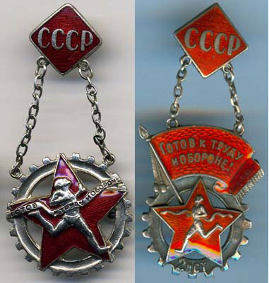

21.4.4. Национальная политика большевизма безальтернативна
Том 6 · osnovy-sociologii-tom-6.pdf · стр. 351 (кандидат) · Кандидат страницы PDF; требуется сверка · источник: PDF/DOC данной редакции.
Содержит авторские утверждения; их фактическая достоверность оценивается отдельно.
21.4.4. Национальная политика большевизма безальтернативна
В настоящем разделе изложено кратко только то, что относится к делу большевизма и его перспективам. Всё сопутствующее этой теме обстоятельно изложено в других работах ВП СССР: взгляды на течение глобального исторического процесса изложены в работах «Мёртвая вода» и «Печальное наследие Атлантиды. Троцкизм — это “вчера”, но никак не “завтра”», «“Сад” растёт сам?..»; взгляды на историю Руси — России — СССР в её взаимосвязях с глобальным историческим процессом — в работах «Смута на Руси: зарождение, течение, преодоление…», «Иудин грех ХХ съезда», «Мёртвая вода», «“Сад” растёт сам?..»; взгляды на историю организации революций в Российской империи — в работе «Разгерметизация».
Исторический опыт великого княжества Московского, потом — Московского царства и позднее — Российской империи, которые в прошлые эпохи были формой государственного существования региональной цивилизации Руси, показывает: в тот исторический период единство многонациональной (мультикультурной) страны обеспечивалось путём массовой интеграции представителей «элит» народов, на которые распространялась власть российского государства, в состав общегосударственной правящей «элиты». Причём в общероссийскую правящую «элиту» успешно интегрировались и иммигранты-одиночки из других государств: немцы, турки, французы, испанцы, португальцы, итальянцы, англичане, швейцарцы и другие1, включая даже евреев-выкрестов и их потомков (П.П. Шафиров — вице-канцлер Петра I, К.В. Нессельроде — министр иностранных дел Николая I, Е.Ф. Канкрин — министр финансов Александра I (c 1823 г.), а потом — Николая I, хотя наличие еврейских предков К.В. Нессельроде и Е.Ф. Канкрина ряд историков оспаривают; многочисленные мальчики-кантонисты времён Николая I, успешно сделавшие карьеру в армии и на флоте, и их потомки — примеры такого рода). И многие из числа таких «инородцев» и их потомков служили России честно, став по сути русскими людьми своей эпохи2.
Есть исторический анекдот3, возводимый к маркизу Астольфу де’Кюстину (1790 — 1857, автор книги «La Russie en 1839»), посетившему Россию в царствование императора Николая I:
«На придворном балу к маркизу де’Кюстину обратился император Николай I:
— Вы думаете, все эти люди вокруг нас — русские?
— Конечно, Ваше Величество…
— А вот и нет. Это — татарин. Это — немец. Это поляк. Это — грузин, а вон там стоят eврeй и молдаванин.
— Но тогда кто же здесь русские, Ваше Величество?
— А вот все вместе они (в другой версии: все вместе мы) русские!»
При этом одна из задач, которую решала имперская правящая «элита» — оказание помощи национальным («туземным») «элитам» в поддержании режима эксплуатации «человека человеком» в национальных обществах — вплоть до силового подавления бунтов с привлечением сил регулярной армии (в частности «Пугачёвский бунт» был многонациональным, и его подавляла регулярная армия как в интересах сохранения династии Романовых, режима крепостничества и целостности империи, так и в интересах региональных национальных «элит»; были и мелкие бунты в «инородческих» регионах, которые тоже подавлялись с привлечением сил регулярной армии).
Однако принципы кадровой политики Российской империи выражали нравы и этику родоплеменного строя в его многонациональной версии. В силу этого обстоятельства пробиться из простонародья в имперскую «элиту» — в потомственное дворянство (а тем более — в малочисленную группу кланов, из поколения в поколение поставлявших империи бюрократов и военных деятелей высших рангов) — было не просто представителям всех национальностей. Династия Романовых тупо поддерживала сословно-кастовый строй как якобы Богом данный, поскольку он наиболее полно соответствовал нравам и этике верхушки родоплеменной иерархии кланов и персон, и не заботилась о расширении кадровой базы управленческого корпуса путём просвещения простонародья и вовлечения выходцев из него в государственное управление на всех уровнях, в науку, в систему образования. Последнее было объективно необходимо для бескризисного развития страны путём искоренения родоплеменной толпо-«элитарной» антихристианской этики и демонтажа сословно-кастового строя4. Как следствие игнорирования программного (политико-алгоритмического) стихотворения А.С. Хомякова «России» (1839 г., см. Приложение 10 в настоящем томе), несозыва Собора русской православной церкви5 и проведения в жизнь положений неоднократно упоминавшегося ранее «указа о кухаркиных детях»6, заблокировавшего доступ к образованию детям «простолюдинов», Российская империя рухнула по её внутренней причине — обусловленной системообразующими принципами неспособности сформировать управленческий корпус необходимой численности и квалификации, в преемственности поколений успешно выявляющий и разрешающий проблемы развития человечества и страны. Все прочие причины краха Российской империи — вторичны либо представляют собой следствия и сопутствующие условия для действия этой — главной — причины: хронической неспособности управленческого корпуса империи, кланово-«элитарно» обособившегося от общества и живущего в мире своих иллюзорных фантазий и вожделений, праведно и заблаговременно (т.е. по схеме «предиктор-корректор») отвечать на «вызовы времени».
На смену империи и саморазрушительному безвластию временного правительства либерал-буржуинов 7 ноября 1917 г. пришла Советская власть. Становление Советской власти в 1917 г. и в годы гражданской войны носило двоякий характер:
С одной стороны — Советы как органы власти учреждались на местах самими людьми — большей частью большевиками из простонародья. Т.е. «снизу» шло становление и формирование государственности Советской власти как общенародной прямой и оперативной демократии — самодержавия народа. Но Советская власть в то время не могла состояться в таковом качестве, что было обусловлено массовой некомпетентностью её активистов — выходцев из простонародья, не получивших должного для осуществления государственного управления образования**.**
С другой стороны изначально замасоненное руководство марксистской партии РСДРП (б) — РКП (б) — ВКП (б) формировало Советы высших уровней государственной власти и входило в них, имея целью подчинение марксистскому проекту и себе персонально низовых Советов всеми правдами и неправдами. Т.е. сверху шло формирование государственности Советской власти как масонской диктатуры, реализуемой в формах фальшь-демократии и осуществляемой опосредованно через единственную правящую партию, представляемую в пропаганде в качестве авангарда всего народа. В этом процессе участвовали (и тем более им закулисно руководили) люди, получившие хорошее образование, однако ориентированное на реализацию библейского проекта порабощения человечества от имени Бога, а не на решение задач, провозглашённых Советской властью в качестве её идеалов.
Итогом процесса становления государственности СССР к началу 1930‑х гг. стало весьма специфическое и внутренне разнородное социальное образование, включающее в себя на всех уровнях «вертикали власти»:
- масонство в двух основных ветвях: псевдосоциалистическое масонство на идейной основе эзотерического истинного марксизма7 и буржуазно-либеральное масонство на основе традиционных библейских верований и беззастенчивого атеизма:
<!-- -->
первые контролировали партийный и советский аппарат;
вторые контролировали Академию наук и через общественный институт «наука» — систему образования, а в качестве специалистов-профессионалов участвовали в работе государственного аппарата, в управлении хозяйством и вооружёнными силами, занимая подчас высокие должности.
Но и буржуазно-либеральная ветвь масонства не была однородной, а включала в себя два подразделения:
космополитичное (интернацизм — его носителями на протяжении многих десятилетий являются отечественные западники разных национальностей и многие представители еврейско-иудейской диаспоры);
имперское (иначе говоря — «элитарии»-государственники, по составу — это главным образом великороссы и потомки давно обрусевших «инородцев», а также и поддерживающие великоросский имперский проект «инородцы» без различия их национального происхождения, включая и некоторое количество представителей еврейско-иудейской диаспоры).
Поскольку обе ветви масонства так или иначе работали на библейский проект глобализации, то вышестоящие «братаны» позволяли им сохранять свою идеологическую специфику, кулуарно-непублично дискутировать на темы «социальной философии» и «политологии», но переход дискуссий в войну на уничтожение идейного противника блокировали8.
<!-- -->
стоящие вне масонских структур носители марксистской идеологии, верующие в научную состоятельность марксизма, т.е. марксисты-экзотерики — члены партии и беспартийные приверженцы социализма, доверяющие истолкование жизни на основе марксистских текстов вождям партии.
профессиональные бюрократы (в том числе и юристы), главные качества которых:
<!-- -->
абсолютная беспринципность и безыдейность (в том смысле, что бюрократы способны ссылаться на любую идеологию и менять свои «идеологические воззрения» по мере изменения политической конъюнктуры и воззрений закулисной «партии власти») — бесстыдство и бессовестность их жизненный принцип, на основе которого и формируется бюрократическая корпорация;
холопская услужливость по отношению к «хозяину»9 (бюрократия концептуально безвластна, не способна к управлению по полной функции, хотя легко встраивается в программно-адаптивный модуль системы управления, поэтому самостийно-бесхозной она может быть только относительно непродолжительное время);
нежелание и неумение вникать в суть дела (этим, по их мнению, должны заниматься подчинённые профессионалы-специалисты — люди второго и третьего сорта, если бюрократов считать людьми «первого сорта») и подмена реального дела документооборотом и формальной отчётностью.
<!-- -->
- настоящие большевики — разного социального и этнического происхождения, как признающие марксизм в качестве научно-теоретической основы большевизма, так и не признающие его в таковом качестве, как вступившие в партию, так и «беспартийные большевики» (был такой термин в ленинско-сталинские времена).
В итоге, к тому времени когда масонство взрастило потенциал для розжига второй мировой войны ХХ века, И.В. Сталин как персона, олицетворяющая СССР, устраивал и руководство масонства, стоящее над обеими названными выше его ветвями, и верующих в научную состоятельность марксизма приверженцев социализма, и бюрократию, которая после всего, происшедшего в 1930‑е гг., признала в И.В. Сталине «хозяина», и большевиков. И каждая из этих сил работала в меру своего понимания и наличия подконтрольных ей ресурсов (прежде всего, ресурсов социальных в целом и кадровых — управленческих, в особенности) на свои интересы, а в меру недопонимания — на тех, кто понимает больше. Поэтому политика Советской государственности во всех её аспектах (глобальная, внешняя и внутренняя) была внутренне разнородной, вплоть до конфликтности. Т.е. она не была полностью ни большевистской, ни идейно-марксистской, ни пробуржуазно-либеральной, ни тупо бюрократически-хапужнической.
Вопреки этой исторической данности либерал-буржуины и марксисты-троцкисты всё списывают на извращение их благих намерений большевиками под руководством И.В. Сталина и представляют большевизм как главную угрозу для человечества, в каком воззрении все они идентичны А. Гитлеру.
Поэтому для понимания возможностей разрешения проблем мультикультурализма в государствах и проблем многонационального человечества, необходимо за потоком событий жизни СССР ленинско-сталинской эпохи увидеть большевистские принципы гармонизации взаимоотношений людей и культур во многонациональном обществе.
Соответственно далее речь пойдёт не о злоупотреблениях, ошибках в политике ВКП (б) и государственности, не проистекавших из них реальных и мнимых ужасах эпохи, а о том, что делалось правильно.
Если соотноситься с объективными закономерностями всех шести групп, которым подчинена жизнь людей, то на первом месте стоит государственная политика защиты природной среды, её воспроизводства и благоустройства. Эта проблематика была вне содержания политики Советской власти в 1920 — 1940‑е гг. Однако после победы в Великой Отечественной войне эта проблематика была включена в область ответственности Советского государства. 20 октября 1948 года было принято Постановление Совмина СССР и ЦК ВКП (б) о реализации проектов великого русского учёного-почвоведа В.В. Докучаева (1846 — 1903) — автора книги «Наши степи прежде и теперь» и по сути одного из первых в истории нынешней цивилизации учёных экологов.
«Для борьбы с засухой и для спасения почв было решено: 1) создать до 1965 года восемь государственных лесополос в 16 областях страны общей протяженностью 5 тысяч километров; 2) создать значительный массив местных лесополос; 3) создать 45 тысяч прудов; 4) организовать лесные питомники; 5) организовать обучение специалистов по посадке, разведению, содержанию и охране лесов и водоёмов; 6) внедрить механизацию в сферу лесопосадочных работ. На этом экологические планы Сталина, однако, не заканчивались.
В мае 1949 года — в самый разгар Берлинского кризиса! — появилось постановление Совмина СССР о борьбе против загрязнения атмосферного воздуха и об улучшении санитарно-гигиенических условий в населенных местах. Это постановление: 1) строго запрещало строить либо восстанавливать промышленные предприятия без очистных сооружений; 2) вводило в технических вузах обязательные курсы по проблемам охраны окружающей среды; 3) утверждало программу выпуска контрольно-измерительной аппаратуры для наблюдения за состоянием окружающей среды; 4) предписывало госсанинспекциям систематически собирать и публиковать материалы о промышленных выбросах в атмосферу.10
Эти постановления запускали гигантские механизмы в сфере экономики, в социальной жизни. Например, только в течение четырех лет после 1948 года план лесопосадок, рассчитанный на семнадцать лет вперед, был уже выполнен на треть. В газетах того времени борьбу с эрозией почв и с засухой стали называть «священным делом». Пропаганда сравнивала продвижение государственных лесополос со «сталинскими ударами» 1944 года. При этом, однако, авторство проекта Сталину не приписывалось, а говорилось именно о великом почвоведе Докучаеве. К проекту были подключены гигантские трудовые ресурсы»11. (См. агитационный плакат ниже по тексту).
Сталинский план благоустройства природной среды
в европейской части СССР
В послесталинские времена всё это было предано забвению, и это одно из проявлений, в котором выражается антинародность всех послесталинских режимов. «Многие лесополосы были вырублены, несколько тысяч прудов и водоёмов, которые предназначались для разведения рыб, были заброшены, созданные в 1949—1955 годах 570 лесозащитных станций были ликвидированы по указанию Н.С. Хрущёва»12.
Кроме того в хрущёвские времена было уничтожено множество «колхозных ГЭС» на мелких реках, осушено множество болот, что понизило уровень грунтовых вод на многих территориях и не пошло на пользу экологии страны, создав предпосылки к обширным летним «природным пожарам»13. Казахстан обязан Н.С. Хрущёву экологической катастрофой14, которая возникла вследствие агрессивно паразитического рваческого «освоения целины», инициатором которого он стал, игнорируя предостережения учёных.
В наши дни такого рода научно обоснованные жизненно состоятельные программы оздоровления биосферы и благоустройства среды обитания и соответствующие работы необходимы для всех государств и для всех регионов, поскольку только они создают предпосылки для успешного разрешения всех прочих проблем цивилизации.
И прежде всего они необходимы для успешного осуществления государственной политики оздоровления населения в преемственности поколений не столько за счёт развития медицины (её технологий) и навязывания населению разного рода «медицинских услуг», сколько за счёт перехода всего населения к здоровому образу жизни и снижению за счёт этого предрасположенности к заболеваниям и травматизму.
Политика оздоровления населения может быть успешной только в том случае, если она строится в соответствии со специфическими видовыми закономерностями, характерными для биологического вида «Человек разумный». Пропаганда и государственная поддержка здорового образа жизни была составной частью большевистской государственной политики, один из примеров чего представлен на фотографии ниже в сопоставлении с современностью.
Государственные деньги и деньги общественных организаций вкладывались в массовое физкультурное движение, а не в показушных спортсменов «высоких достижений». Для этого создавались общедоступные спортивные сооружения: спортплощадки и стадионы, «водные станции»15, аэроклубы, в парках культуры и отдых тоже имелись спортивные сооружения, которыми можно было пользоваться бесплатно или за «символическую» плату16.
Слева фотография 1928 г. Такие детские демонстрации организовывались в то время повсеместно, поскольку политика государства была направлена на искоренение пьянства и защиту детей от пьянства родителей и его последствий для будущих поколений. Другой вопрос, что тогда не понимали, что пьянство возникает из так называемого «культурного пития», пития «в меру», которое воспринимали как норму жизни.
Справа фотография наших дней. Запечатлённое на фото носит массовый характер, но государство проводит политику воспроизводства этого порока, осуществляя «самогеноцид» населения.
Такова зримая разница
между политикой большевизма и либерализма.
В подавляющем большинстве случаев это были открытые сооружения, где можно было заниматься укреплением своего здоровья и развитием тела на свежем воздухе, во взаимодействии организма с природными стихиями во всём их разнообразии. Поэтому всё это было несоизмеримо дёшево в сопоставлении с железобетонными спортивными комплексами наших дней и не было дефицитом. Большинство сооружений этой системы массового физкультурного движения можно было создавать с нуля и поддерживать в работоспособном состоянии силами самих физкультурников и по их инициативе, поскольку при их сооружении и ремонте использовались общедоступные материалы соответствующих регионов.
[В оригинальном издании здесь расположена иллюстрация. Не воспроизводится до правовой проверки и решения владельца; см. запись в FIGURES.md.] <!-- figs:osnovy-sociologii-tom-6--image29 -->
Типичная «водная станция» сталинских времён в провинции: Тюмень, 1951 г.
Всё это делалось для того, чтобы взрослые и подростки занимались физкультурой в своё удовольствие, а дети возрастом помладше брали с них пример, а не для того, чтобы чиновники «осваивали» (т.е. присваивали себе) бюджетные деньги и отчитывались перед вышестоящими бюрократами о введении в строй как бы «спортивных» сооружений шоу-бизнеса17.
Общесоюзная статистика результатов сдачи нормативов комплексов упражнений БГТО («Будь готов к труду и обороне» — детский комплекс) и ГТО («Готов к труду и обороне» — юношеский и взрослый) характеризовала реальные показатели здоровья населения в динамике их изменений год от года. Это весьма далеко от нынешнего спорта «высоких достижений»: на фоне «успехов» страны в этой сфере люди в большинстве своём не в состоянии сдать нормативы БГТО (для школьников 1 — 8 классов, 4 возрастных ступени) и ГТО (для учащихся старше 16 лет и взрослого населения, 3 ступени) 1930‑х гг. С 1931 по 1941 г. порядка 6 миллионов человек сдали нормы комплекса ГТО I ступени, и более 100 тысяч человек — II ступени.
Знаки ГТО СССР 1-й и 2-й ступеней 1936 — 1940 гг.

С нашей точки зрения гораздо лучше, если:
процентов 95 подростков и взрослых ежегодно в состоянии подтвердить нормативы комплексов БГТО и ГТО для своих возрастных групп, но страна при этом не участвует ни чемпионатах разного уровня, ни в олимпийских игрищах, где для победы требуется калечить людей во всех аспектах триединства материи-информации-меры,
нежели то положение дел со здоровьем населения и шоуменов-спортсменов, которое имеет место ныне и культивируется либерально-буржуазной государственностью и спонсорами-рекламодателями.
Причём сами знаки БГТО и ГТО были не показателями удовлетворённого честолюбия спортсменов в соревнованиях с другими честолюбцами, а большей частью средством самооценки человеком состояния здоровья своего организма и телесного развития, необходимых и ему самому для полноценной жизни, и обществу, и государству для обеспечения устойчивости развития.
Понятно, что вопрос о специальном «спортивном питании», «допинге» для достижения высоких результатов и взращивания шоуменов для отстаивания «чести страны» в «спорте наивысших достижений» в этой системе не вставал.
В начальный период своего становления эта система была ориентирована на воспроизводство здорового населения и повышения статистических показателей здоровья в преемственности поколений.
Переориентация её с массового физкультурного движения на профессиональный спорт высоких результатов, в который вовлечена со вредом для их здоровья ничтожная доля населения страны, была осуществлена усилиями бюрократов уже в послесталинские времена.
Т.е. политика Советской власти в области развития массового физкультурного движения была эффективна в аспекте повышения показателей здоровья населения в преемственности поколений, поскольку соответствовала специфическим видовым закономерностям, характерным для биологического вида «Человек разумный»: организм, угнетаемый алкоголем и прочими ядами, а также обездвиженностью — обречён быть нездоровым, и это своё нездоровье будет транслировать последующим поколениям на основе генетического механизма биологического вида (т.е. на уровне ДНК и на уровне биополевой компоненты).
Следующая группа закономерностей — ноосферно-религиозные — нравственно-этические по своему характеру. Задача искоренения эксплуатации «человека человеком» и построение общества действительно свободных людей, чья воля под властью диктатуры совести взаимно благодетельно дополняет волю всех других добросовестных людей, по своему существу — задача изменения статистически преобладающих в обществе нравственности и этики.
Эта задача должна быть решена в ограничениях техносферной цивилизации, чтобы люди сначала перешли к праведной нравственности и этике, и это достижение стало бы гарантией безопасного перехода к биологической цивилизации и гарантией её дальнейшего безопасного развития. Соответственно искоренение эксплуатации «человека человеком», будучи одним из аспектов этой комплексной задачи, предполагает безальтернативное господство в обществе нравственности, исключающей принципы «моя хата с краю», «после нас — хоть потоп», «принимайте меня таким, каков я есть, а кто не согласен, — покажите, что вы “круче”» и им аналогичные. При этом праведность практически выражается и вырабатывается в этике созидания и взаимопомощи. Такая этика в условиях цивилизации, полностью зависящей от техносферы и производства, может формироваться только в трудовой деятельности людей, поскольку в жизни, основанной на коллективном труде, подавляющие (отрицательные) обратные связи в иерархически высшем по отношению к обществу управлении (действует пресловутая «карма») замыкаются на людей через производимую ими продукцию по принципу «ложка дёгтя портит бочку мёда»: т.е. недобросовестная работа одного может сорвать проект, в котором заняты миллионы, и от результата которого в большей или меньшей мере может зависеть жизнь (качество жизни) подчас сотен миллионов, если не всего человечества; а поощряющие (положительные) обратные связи в иерархически высшем по отношению к обществу управлении замыкаются в виде роста качества жизни в смысле снижения статистики разного рода неприятностей18: «Ищите прежде Царствия Божия и Правды Его, и это всё (по контексту благоденствие земное для всех людей) приложится вам» (Матфей, 6:33).
В этой связи посмотрим на монеты СССР 1920‑х гг. (фото ниже по тексту). Значимо не то, что они выполнены из серебра, а то, что на них отчеканено: «Пролетарии всех стран, соединяйтесь!» — это альтернатива принципам «моя хата с краю» и «после нас — хоть потоп», поскольку предполагает единение людей в созидании лучшего будущего в преемственности поколений без различий их национального и сословно-кастового происхождения. Изображения же на обеих монетах представляют и возвеличивают труд (на полтиннике — 50 копеек) и устремлённость в светлое будущее (рабочий как символ диктатуры пролетариата зовёт с собой крестьянина, который опирается рукой на борону, навстречу восходу солнца).
Это — тоже пропаганда, причём если не каждодневная, то еженедельная, поскольку в магазины и на рынки приходилось регулярно ходить всем и этими монетами наряду с бумажными деньгами пользовалось практически всё население страны, а дети, познавая мир, требовали от взрослых пояснений на тему: что на монетах изображено и что это значит? — вследствие чего взрослым приходилось объяснять детям, что труд — источник всех благ, которые в цивилизованном обществе потребляют взрослые и дети.
[В оригинальном издании здесь расположены иллюстрации (2 объекта). Иллюстрации опущены: см. реестр графического слоя работы.] <!-- figs:osnovy-sociologii-tom-6--image31,osnovy-sociologii-tom-6--image32 -->
Т.е. всё это подразумевает, что в основе обеспеченности денег СССР как и в основе благополучия всех и каждого — лежит труд людей, профессионализм и добросовестность каждого из них.
И вся символика на советских деньгах говорила о том, что они не должны быть инструментом для паразитизма на труде и жизни других людей путём извлечения нетрудовых доходов из денежного обращения.
Российская империя накануне первой мировой войны, вследствие действия и последействия «указа о кухаркиных детях» была страной отсталой в научно-техническом и экономическом отношении, утратившей перспективы развития при условии сохранения исторически сложившихся культуры в целом и государственности, в частности. И если соотносить с темпы развития в ту эпоху экономик России, США, Германии, Великобритании, Франции, — то Россия всё больше и больше отставала от них, т.е. деградировала20. Последний голод в империи (официально «политкорректно» именовавшийся «недородом» — царям не нравилось, что под их властью голод на протяжении десятилетий систематически охватывал многие регионы империи) имел место в 1911 г.21, голодало порядка 32 млн. человек, умерло порядка 1,8 млн. человек; по данным военного ведомства порядка 40 % новобранцев впервые пробовали мясо только после призыва на службу.
Соответственно, Советской власти (даже без учёта разрухи гражданской войны22) наследство от династии Романовых досталось «аховое». И для того, чтобы у народов страны появились перспективы развития, — мало было работать так, как умели тогда работать. Необходимо было работать лучше, чем уже́ умели, а для этого надо было повышать уровень образования всего общества, и прежде всего, — молодёжи.
Поскольку телевидения и радиовещательной сети ещё не было, то задачу пробудить интерес к повышению уровня образования решали агитационные плакаты, которые висели на видных местах в учреждениях, на заводах, в клубах, в других общественных зданиях. Один из таких плакатов представлен слева: кто может что-либо возразить против написанного на нём? И кроме того, по существу задача состояла не только в том, что строительство коммунизма требовало знаний, но и в том, что коммунизму как образу жизни тоже надо было учиться, и прежде всего — надо было учиться молодёжи — будущему страны.
[В оригинальном издании здесь расположена иллюстрация. Не воспроизводится до правовой проверки и решения владельца; см. запись в FIGURES.md.] <!-- figs:osnovy-sociologii-tom-6--image34 -->
В этой же связи рекомендуем перечитать речь В.И. Ленина на III съезде Всероссийского коммунистического союза молодёжи «Задачи союзов молодёжи» 2 октября 1920 г.23
После оценки итогов реформы системы образования, проведённой либералами в постсоветские годы24, многое из сказанного В.И. Лениным 100 лет тому назад без малого, снова стало актуальным:
«… как надо поставить основные задачи, когда мы говорим о задаче: научиться коммунизму.
Чтобы это вам пояснить, подходя в то же время к вопросу, как учиться, я возьму пример практический. Вы все знаете, что перед нами сейчас же вслед за задачами военными, задачами охраны республики, встаёт задача хозяйственная. Мы знаем, что коммунистического общества нельзя построить, если не возродить промышленности и земледелия, причем надо возродить их не по-старому. Надо возродить их на современной, по последнему слову науки построенной, основе. Вы знаете, что этой основой является электричество, что только когда произойдёт электрификация всей страны, всех отраслей промышленности и земледелия, когда вы эту задачу освоите, только тогда вы для себя сможете построить то коммунистическое общество, которого не сможет построить старое поколение. Перед вами стоит задача хозяйственного возрождения всей страны, реорганизация, восстановление и земледелия, и промышленности на современной технической основе, которая покоится на современной науке, технике, на электричестве. Вы прекрасно понимаете, что к электрификации неграмотные люди не подойдут, и мало тут одной простой грамотности. Здесь недостаточно понимать, что такое электричество: надо знать, как технически приложить его и к промышленности, и к земледелию, и к отдельным отраслям промышленности и земледелия. Надо научиться этому самим, надо научить этому всё подрастающее трудящееся поколение. Вот задача, которая стоит перед всяким сознательным коммунистом, перед всяким молодым человеком, который считает себя коммунистом и ясно отдаёт себе отчёт, что он, вступив в Коммунистический союз молодёжи, взял на себя задачу помочь партии строить коммунизм и помочь всему молодому поколению создать коммунистическое общество. Он должен понять, что только на основе современного образования он может это создать, и, если он не будет обладать этим образованием, коммунизм останется только пожеланием.
(…)
… Перед вами задача строительства, и вы её можете решить, только овладев всем современным знанием, умея превратить коммунизм из готовых заученных формул, советов, рецептов, предписаний, программ в то живое, что объединяет вашу непосредственную работу, превратить коммунизм в руководство для вашей практической работы.
Вот задача ваша, которой вы должны руководствоваться в деле образования, воспитания, подъёма всего молодого поколения. Вы должны быть первыми строителями коммунистического общества среди миллионов строителей, которыми должны быть всякий молодой человек, всякая молодая девушка. Без привлечения всей массы рабочей и крестьянской молодежи к этому строительству коммунизма вы коммунистического общества не построите.
(…)
Вы должны воспитать из себя коммунистов. Задача Союза молодежи — поставить свою практическую деятельность так, чтобы, учась, организуясь, сплачиваясь, борясь, эта молодёжь воспитывала бы себя и всех тех, кто в ней видит вождя, чтобы она воспитывала коммунистов. Надо, чтобы всё дело воспитания, образования и учения современной молодежи было воспитанием в ней коммунистической морали.
Но существует ли коммунистическая мораль? Существует ли коммунистическая нравственность? Конечно, да. Часто представляют дело таким образом, что у нас нет своей морали, и очень часто буржуазия обвиняет нас в том, что мы, коммунисты, отрицаем всякую мораль. Это — способ подменять понятия, бросать песок в глаза рабочим и крестьянам.
В каком смысле отрицаем мы мораль, отрицаем нравственность?
В том смысле, в каком проповедовала её буржуазия, которая выводила эту нравственность из велений бога. Мы на этот счёт, конечно, говорим, что в бога не верим, и очень хорошо знаем, что от имени бога говорило духовенство, говорили помещики, говорила буржуазия, чтобы проводить свои эксплуататорские интересы. Или вместо того, чтобы выводить эту мораль из велений нравственности, из велений бога, они выводили её из идеалистических или полуидеалистических фраз, которые всегда сводились тоже к тому, что очень похоже на веления бога.25
(…)
… для коммуниста нравственность вся в этой сплоченной солидарной дисциплине и сознательной массовой борьбе против эксплуататоров. Мы в вечную нравственность не верим и обман всяких сказок о нравственности разоблачаем. Нравственность служит для того, чтобы человеческому обществу подняться выше, избавиться от эксплуатации труда (выделено нами жирным при цитировании).
Чтобы это осуществить, нужно то поколение молодёжи, которое начало превращаться в сознательных людей26 в обстановке дисциплинированной отчаянной борьбы с буржуазией. В этой борьбе оно воспитает настоящих коммунистов, этой борьбе оно должно подчинить и связать с ней всякий шаг в своём учении, образовании и воспитании. Воспитание коммунистической молодежи должно состоять не в том, что ей подносят всякие усладительные речи и правила о нравственности. Не в этом состоит воспитание. Когда люди видели, как их отцы и матери жили под гнетом помещиков и капиталистов, когда они сами участвовали в тех муках, которые обрушивались на тех, кто начинал борьбу против эксплуататоров, когда они, видели, каких жертв стоило продолжить эту борьбу, чтобы отстоять завоёванное, каким бешеным врагом являются помещики и капиталисты, — тогда эти люди воспитываются в этой обстановке коммунистами. В основе коммунистической нравственности лежит борьба за укрепление и завершение коммунизма. Вот в чём состоит и основа коммунистического воспитания, образования и учения. Вот в чём состоит ответ на вопрос, как надо учиться коммунизму»27.
И это не было словами, брошенными в пустоту, они отвечали чаяниям простонародья о лучшей жизни, нежели та, что имела место в Российской империи, которую многие люди были нравственно готовы созидать своим трудом.
«Первый коммунистический субботник состоялся в депо Москва-Сортировочная Московско-Казанской железной дороги 12 апреля 1919 года.
Впрочем, субботник начался не утром в субботу, а в ночь на субботу. В цех депо Москва-Сортировочная после рабочего дня вернулась группа рабочих из 15 человек, из которых 13 были коммунисты, а двое — «сочувствующие». Рабочие стали ремонтировать паровозы. Как отмечалось в протокольной записи организатора мероприятия, председателя деповской ячейки И.Е. Буракова, работали беспрерывно до 6 часов утра (десять часов) и отремонтировали три паровоза текущего ремонта за № 358, 4 и 702428. Работа шла дружно и спорилась так, как никогда прежде.
В 6 часов утра пролетарии собрались в служебном вагоне, где, отдохнув и попив чаю, стали обсуждать текущий момент и решили такую ночную работу — с субботы на воскресенье, продолжать еженедельно.
10 мая 1919 года состоялся первый массовый коммунистический субботник на Московско-Казанской железной дороге. В субботнике участвовало уже 205 человек. После этого события Ленин написал статью «Великий почин (О героизме рабочих в тылу. По поводу “коммунистических субботников”)», она была опубликована отдельной брошюрой в июле 1919 года.
По мнению Ленина, инициатива московских железнодорожников, подхваченная на промышленных предприятиях, стала проявлением героизма трудящихся масс, которые начали практическое строительство социализма. Субботники явились выражением нового, «добровольного» подхода к труду в обстановке экономического спада и голода, которая царила в России в эти годы»29.
В статье «Великий почин» В.И. Ленин писал:
«Героизм трудящихся масс, сознательно приносящих жертвы делу победы социализма, вот что является основой новой, товарищеской дисциплины в Красной Армии, её возрождения, укрепления, роста.
Не меньшего внимания заслуживает героизм рабочих в тылу. Прямо-таки гигантское значение в этом отношении имеет устройство рабочими, по их собственному почину, коммунистических субботников. Видимо, это только ещё начало, но это начало необыкновенно большой важности. Это — начало переворота, более трудного, более существенного, более коренного, более решающего, чем свержение буржуазии, ибо это — победа над собственной косностью, распущенностью, мелкобуржуазным эгоизмом, над этими привычками, которые проклятый капитализм оставил в наследство рабочему и крестьянину. Когда эта победа будет закреплена, тогда и только тогда новая общественная дисциплина, социалистическая дисциплина будет создана, тогда и только тогда возврат назад, к капитализму, станет невозможным, коммунизм сделается действительно непобедимым»30.
Далее В.И. Ленин цитирует статью, опубликованную в газете «Правда» 17 мая 1919 г.:
«Оказалось, что по недостатку рабочей силы и слабой интенсивности труда задерживаются срочные заказы и спешный ремонт паровозов. 7 мая на общем собрании коммунистов и сочувствующих подрайона Московско-Казанской дороги был поставлен вопрос о переходе от слов о содействии победе над Колчаком к делу. Вынесенное предложение гласило:
«Ввиду тяжелого внутреннего и внешнего положения, для перевеса над классовым врагом коммунисты и сочувствующие вновь должны пришпорить себя и вырвать из своего отдыха еще час работы, т. е. увеличить свой рабочий день на час, суммировать его и в субботу сразу отработать 6 часов физическим трудом, дабы произвести немедленно реальную ценность. Считая, что коммунисты не должны щадить своего здоровья и жизни для завоеваний революции — работу производить бесплатно. Коммунистическую субботу ввести во всем подрайоне до полной победы над Колчаком».
После некоторых колебаний это предложение было принято единогласно.
В субботу, 10 мая, в 6 часов вечера, как солдаты, явились коммунисты и сочувствующие на работу, построились в ряды и без толкотни были разведены мастерами по местам.
(…)
Общая стоимость работы по нормальной оплате 5000 тыс. рублей, сверхурочной в 1 1/2 раза больше. Интенсивность труда по нагрузке выше обыкновенных рабочих на 270 %. Остальные работы приблизительно такой же интенсивности.
Устранена задерживаемость заказов (срочных) по недостатку рабочей силы и волоките от семи дней до трёх месяцев.
Работа происходила при наличии неисправности (легко устранимой) приспособлений, задерживавших отдельные группы от 30 до 40 минут.
Администрация, оставленная для руководства работами, едва успевала подготовить новые, и, может быть, немного преувеличено выражение старика-мастера, что в коммунистическую субботу сделано работы за неделю, против работы несознательных и расхлябанных рабочих.
Ввиду того, что на работах присутствовали и просто искренние сторонники Советской власти и ожидают наплыва таковых на будущие субботы, а также желания других районов взять пример с коммунистов-железнодорожников Московско-Казанской дороги, я остановлюсь подробнее на организационной стороне по сообщениям с мест.
На работах было процентов 10 коммунистов, постоянно работающих на местах. Остальные — занимающие ответственные посты и выборные, от комиссара дороги до комиссара отдельного предприятия, а также профессионального союза, и работающих в управлении и Комиссариате путей сообщения.
Воодушевление и дружность работы небывалая. Когда без ругани и споров рабочие, конторщики, управленцы, охватив сорокапудовый бандаж колеса для пассажирского паровоза, перекатывали его на место, как трудолюбивые муравьи, на сердце рождалось горячее чувство радости от коллективного труда и крепла вера в непоколебимость победы рабочего класса. Мировым хищникам не задушить победителей-рабочих, внутреннему саботажу не дождаться Колчака.
По окончании работ присутствующие были свидетелями невиданной картины: сотня коммунистов, уставших, но с радостным огоньком в глазах, приветствовала успех дела торжественными звуками Интернационала — и казалось, что эти победные волны победного гимна перельются за стены по рабочей Москве и, как волны от брошенного камня, разойдутся по рабочей России и раскачают уставших и расхлябанных»31.
Далее В.И. Ленин даёт оценку происшедшему и перспективам этой социальной простонародной (а не «элитарной») инициативы:
«Крепостническая организация общественного труда держалась на дисциплине палки, при крайней темноте и забитости трудящихся, которых грабила и над которыми издевалась горстка помещиков. Капиталистическая организация общественного труда держалась на дисциплине голода, и громадная масса трудящихся, несмотря на весь прогресс буржуазной культуры и буржуазной демократии, оставалась в самых передовых, цивилизованных и демократических республиках темной и забитой массой наёмных рабов или задавленных крестьян, которых грабила и над которыми издевалась горстка капиталистов. Коммунистическая организация общественного труда, к которой первым шагом является социализм, держится и чем дальше, тем больше будет держаться на свободной и сознательной дисциплине самих трудящихся, свергнувших иго как помещиков, так и капиталистов.
Эта новая дисциплина не с неба сваливается и не из добреньких пожеланий рождается, она вырастает из материальных условий крупного капиталистического производства, только из них. Без них она невозможна».
Последний абзац нуждается в пояснениях. Капитализм, формирующийся изначально на основе индивидуального частного предпринимательства создаёт систему производства и распределения продукции (технологии и организация) на основе коллективного профессионально специализированного труда. При этом возникает то, что марксизм обозначает термином «основное противоречие капитализма» — «противоречие между общественным характером процесса производства и частнокапиталистической формой присвоения» продуктов труда. Суть этого «основного противоречия капитализма» в том, что работали и создавали продукт множество людей, а собственником результата труда является собственник капитала, вложенного в предприятие и в производственный процесс. В либерально-буржуазном миропонимании это — норма, и в её идеале наёмный работник должен работать, ориентируясь на плату (т.е. «деньги зарабатывать»), а не на результат труда как таковой (результат — это не его компетенция); предприниматель тоже должен организовывать предприятие ради достижения самоокупаемости предприятия и получения как можно более высокой прибыли, а не ради результата деятельности предприятия как такового (более того, высокая прибыль может достигаться и в ущерб результату как таковому). Т.е. в этой системе царит капиталократия, в которой все — рабы-невольники денег: и капиталисты (собственники капиталов, предприятий, продукции), и наёмные работники, чьим коллективным трудом поддерживается функциональная состоятельность всех предприятий и на каждом из них создаётся продукция. Соответственно: если оплаты за труд и за продукцию не предвидится — не будет ни труда, ни продукции, даже если у общества есть потребность в этой продукции и имеющиеся знания вполне позволяют произвести эту продукцию при необходимом уровне качества в достаточном количестве.
Мотивация к любой деятельности в конечном итоге всегда носит психологический характер. По отношению к труду это означает, что для человека труд — как индивидуальный, так и в коллективе — не может быть бессмысленным. Но смысл трудовой деятельности для каждого обусловлен его реальной нравственностью и сложившимся миропониманием в целом, с которым некоторым нравственно обусловленным образом связан и смысл трудовой деятельности.
* * *
О СМЫСЛЕ ТРУДА
В исторически сложившейся культуре глобальной цивилизации типология мотивации к труду, т.е. смысл труда таковы:
в получении результата как такового в его материальном32 или информационно-алгоритмическом33 существе;
в получении денег безотносительно к результату труда в его материальном или информационно-алгоритмическом выражении;
и в получении результата как такового в его материальном или информационно-алгоритмическом существе, и в получении денег.
Причём последний вариант тоже вариативен:
результат как таковой и деньги равноприоритетны34;
результат обладает более высоким приоритетом, нежели оплата труда и покрытие из оплаты труда собственных издержек, связанных с трудом, т.е. с получением результата;
деньги обладают более высоким приоритетом, нежели результат труда как таковой в своём материальном или информационно-алгоритмическом выражении35.
———————
- То, что в абзацах выше выделено прямым жирным шрифтом, — нормальная мотивация к труду в обществе свободных людей, которая предполагает получение результата предельно высокого, возможного для работника качества, а также и отказ от работы, если работник осознаёт свою неспособность достичь минимально приемлемого (требуемого) уровня качества. Однако этой характеристике сопутствует умолчание: если результат труда объективно направлен на общественное развитие, а не на удовлетворение деградационно-паразитических потребностей или на порождение и поддержание процессов деградации36. Это цивилизационный идеал отношения к труду и к результату Русской многонациональной цивилизации и большевизма.
И только он позволяет взаимно дополняюще согласовать вектора целей (интересы развития) труженика, коллектива, государственности, общества.
- То, что выше выделено курсивом (обычным и жирным), характерно для всех культур, в которых человек — раб-невольник денег, однако:
<!-- -->
то, что выделено обычным курсивом, — узаконенная норма для рабов-невольников буржуазно-либеральной культуры;
а то, что выделено жирным курсивом, — в буржуазно-либеральной культуре, если реализуется в жизни, юридически квалифицируется как мошенничество, предоставление услуг и продукции ненадлежащего качества, нарушение договорных обязательств и т.п. Однако на Руси это же — норма «трудовой» этики как для люмпена, так и для той части простонародья, которая разуверилась в благодетельности правящей «элиты» и, не имея за душой никаких альтернатив толпо-«элитаризму», просто саботирует антинародную политику беззаботной и безответственной по отношению к обществу эгоистичной «элиты»; а также это — этическая норма для представителей «элиты» в их отношении к «свободным лохам» и к состоявшимся холопам.
Выделенное жирным курсивом в предшествующем абзаце — одна из главных проблем постсоветской России и представляет угрозу её будущему вплоть до ухода в историческое небытиё.
* *
*
Если соотноситься со сказанным в абзацах, отделённых от основного текста звёздочками, то субботники, организуемые самими работниками, значимы не тем, сколько на них было отремонтировано паровозов или произведено иной продукции, или какова была на них производительность труда; они значимы тем, что через них начала распространяться в обществе представленная выше нормальная мотивация к труду, характерная для общества свободных людей, и тем самым осуществлялось преображение общества, шло обучение коммунизму в трудовой деятельности.
Это не было государственной барщиной, аналогичной барщине времён крепостного права, когда крепостные бесплатно обязаны были работать на «батюшку барина», поскольку там результат труда принадлежал барину; а здесь от результатов труда выигрывало всё общество, включая и самих участников субботников. Государственной барщиной субботники начали становиться по мере того, как бюрократия трансформировалась в эксплуататорский класс и стала инициативу людей подменять разнородным принуждением к бесплатному ритуальному труду. Субботники превратились в государственную ритуальную барщину уже в послесталинские времена. До этого бескорыстный труд на общее благо, характерный для общества свободных людей, распространялся в советском обществе, и этому труду государственная политика распределения заработной платы по отраслям, регионам, по профессиям и уровням квалификации только сопутствовала.
И этот подход к труду с мотивацией на результат как таковой, а не с мотивацией на оплату, охватывал даже пресловутый ГУЛАГ. Книга «Канал имени Сталина»37, написанная коллективом писателей во главе с А.М. Горьким, повествует о строительстве Беломоро-Балтийского канала (ББК). В ней написано не обо всём, что имело место в ГУЛАГе, т.е. в ней не сказано всей правды, но при этом она и не является вымыслом. Та часть правды, которая в ней представлена, состоит в том, что среди контингента заключённых было множество людей, которые никогда ранее в своей жизни не имели некриминальных профессий («медвежатники» с дореволюционным стажем, «карманники» из беспризорников времён гражданской войны и разрухи и т.п.) и честным трудом не заработали ни одной копейки.
На строительстве канала многие из них получили профессии и почувствовали моральное удовлетворение от процесса созидания. По завершении строительства канала больша́я часть заключённых была освобождена, а наиболее проявившие себя в труде были освобождены со снятием судимости и с вручением почётных знаков «Лучшему ударнику ББК ОГПУ» (фото слева), а самые отличившиеся — сверх того были награждены орденами СССР. Причём многие люди, получившие профессии на стройке канала, не пожелали вернуться в криминальный мир, а целыми бригадами, сложившимися на принципах товарищества в ходе строительства Беломоро-Балтийского канала, уезжали на новые стройки, на которых своим трудом показывали пример должной работы уже сложившимся там коллективам.
Надписи на знаке: «Лучшему ударнику ББК ОГПУ». «Труд в СССР дело чести, славы, доблести и геройства».
[В оригинальном издании здесь расположена иллюстрация. Не воспроизводится до правовой проверки и решения владельца; см. запись в FIGURES.md.] <!-- figs:osnovy-sociologii-tom-6--image35 -->
Книга «Канал имени Сталина» была издана в 1934 г., вследствие чего её можно оценивать как «беззастенчиво лживую большевистскую пропаганду». Но книга «Флот, который уничтожил Хрущёв» (автор Широкорад А.Б.) издана в 2004 г. Среди всего прочего она содержит воспоминания о работе в «шарашках», которые в 1930‑е гг. заключённые инженеры проектировали корабельную артиллерию и другое корабельное оборудование. Как это не удивит либералов, и в них люди работали на совесть, будто и не были в заключении по надуманным несправедливым обвинениям.
Кроме того, один из либералов сболтнул сам, не поняв о чём именно он свидетельствует. В 1930-е годы было проведено несколько специальных наборов ЦК ВКП (б) рабочей молодёжи — коммунистов и комсомольцев — в военные училища в целях укрепления рабочей прослойки в командном составе РККА и РРКФ. Либерал, примазавшийся к ВКП (б), был направлен по спецнабору в военное училище лётчиков, что сделало неосуществимыми «его души высокие порывы». Прибыв к месту учёбы, он отказался проходить курс обучения и служить, за что получил три года лагерей по приговору военного трибунала. По его мнению — безвинно, «ни за что». В поезде на пути к месту отбывания наказания он беседовал с уголовником из беспризорников времён гражданской войны. Тот, выслушав его рассказ, заявил: «Если бы меня послали учиться на лётчика, то уж я бы учился...» — но для уголовника со стажем такая возможность была закрыта.38
Показательна и оценка большевистского отношения к труду успешными капиталистами. Советский авиаконструктор А.С. Яковлев в своих воспоминаниях «Цель жизни» сообщает следующее:
«… в начале 30-х годов, советский заказ на изобретенную Хейнкелем авиационную катапульту и летающую лодку выручил его из беды, как он сам пишет об этом в своих мемуарах:
"… Вскоре после успеха моей катапульты в Германии я стал получать многочисленные иностранные заказы. Самый важный и самый сложный из них был получен с Востока. Как-то в начале 1930 года Мария Хуперц (секретарша Хейнкеля. — А. Я.) доложила мне, что пришли два подозрительных господина, вероятно большевики. Она считает, что ей необходимо присутствовать при беседе и следить за ними. В таких обстоятельствах она неплохой телохранитель. Моих визитёров впустили, и я должен признаться, что они не внушили мне большого доверия. Они даже не представились. Старший из них говорил только по-русски, а его товарищ быстро переводил на немецкий.
"Я представитель торговой делегации СССР в Берлине. — Подозрительно оглядываясь по сторонам, старший подождал, пока его друг переведёт эти слова. — Мне поручено спросить у вас, сможете ли вы в кратчайший срок построить катапульту и летающую лодку39. Скажите просто: "да" или "нет". Это всё, что мне надо. Мы пришлём вам технические условия. Вы представите нам проекты. Если они нам понравятся, мы дадим вам заказ".
Я не могу сказать ничего плохого о честности русских в деловых вопросах…
… В лаконичном стиле моих гостей я ответил простым "да". Через два дня я получил документ с техническими условиями...
… Неделю спустя снова появились двое русских. На этот раз они представились. Оказалось, что старший был Алкснис, заместитель командующего красных ВВС, а молодой человек — переводчик Саснов. Я получил заказ на катапульту и опытный экземпляр самолета. "Если этот самолет окажется хорошим, — сказал Алкснис, — вы получите большой заказ. Посмотрим".
Они положили передо мной контракт, содержащий несколько десятков пунктов и невероятное количество деталей: точные даты поставок, контроль со стороны русских, обычные неустойки в случае несоблюдения сроков поставок или снижения характеристик по сравнению с указанными в проектах. Самое главное — это контракт, сказал я себе, а с остальным мы справимся, когда его получим…"
Заказ Хейнкель выполнил. Самолеты с катапультой в установленный срок были отправлены в СССР.
В мемуарах Хейнкеля далее читаем:
"… Несколько месяцев о них ничего не было слышно. Затем неожиданно пришел Алкснис и, как всегда, без обиняков заявил мне: "Летающая лодка очень хороша. Вы получите заказ на строительство двадцати экземпляров".
Сначала я не поверил своим ушам. Это был самый крупный заказ на один тип самолета, когда-либо полученный мной. Для экспериментального завода, подобного моему, это была чрезвычайно большая работа.
… Я спросил: "Приёмочная комиссия тоже прибудет?"
"Конечно, и на этот раз она будет в большем составе, — сказал Алкснис. — Много самолётов требует много глаз. Много глаз видят лучше".
Дальше Хейнкель сетует на русских приёмщиков:
"… Они вмешивались в каждую мелочь… Мои люди не могли избавиться от них. Они сотни раз испытывали материалы. Они испытывали каждую проволоку, каждый кусок полотна, каждую деревянную деталь. Их контроль вскоре заставил меня усилить свой надзор. Мы вдруг начали работать с такой точностью и в таком темпе, каких у нас никогда не было раньше.
"Ну и ну, — говорил я, всегда думал, что мой завод работает как хороший оркестр, но большевики работают лучше. Это чего-нибудь да стоит…"
И ещё Хейнкель свидетельствует:
"… Строительство этих самолетов для русских оказалось очень важным для меня, так как помогло мне пережить ужасный кризис, охвативший не только авиационную, но и всю промышленность... "»40
В годы Великой Отечественной войны было то же самое. Ферапонт Петрович Головатый (1890 — 1951) — советский колхозник, один из инициаторов всенародного патриотического движения по сбору средств в фонд Красной Армии в период Великой Отечественной войны, Герой Социалистического Труда (1948). Член ВКП(б) с 1944 года. Он внёс сбережения на постройку двух самолётов-истребителей, которые подарил лётчику Борису Николаевичу Ерёмину.41 И Ф.П. Головатый был не один такой, были и другие колхозники, которые на свои деньги покупали самолёты, танки, артиллерийские орудия и дарили их воинам.
И если Ф.П. Головатого и К.П. Орловского кто-то из либералов может отнести к маньякам-фанатикам, к единичным исключениям из массы «быдло-совков», вопреки тому, что они были одними из многих настоящих большевиков, то из воспоминаний Л.И. Брежнева «Возрождение» можно узнать, как к труду относилась масса этих самых пресловутых «быдло-совков». В приводимом ниже фрагменте воспоминаний Л.И. Брежнева речь идёт о работах по восстановлению разрушенной в ходе Великой Отечественной войны «Запорожстали», которое курировал Л.И. Брежнев, будучи первым секретарём Запорожского обкома ВКП (б):
«Мы добивались бережного отношения к кадрам, дорожили обстановкой партийной доброжелательности, которая уже установилась в нашей организации. Я вообще никогда не был сторонником грубого, крикливого, или, как его ещё называют, «волевого», метода руководства. Если человек напуган, он ответственности на себя не возьмёт. А нам надо было не сковывать, а, напротив, поддерживать самую широкую инициативу. В тех напряжённых условиях без новаторства, без активных поисков мы ничего бы не добились. Впрочем, в спокойных условиях и вовсе шуметь ни к чему.
Приведу такой пример. На монтаже у нас работал башенный кран БК-15142, по тем временам мощный. Желая ускорить дело, его перегрузили, и кран упал, вышел из строя. Когда сообщили об аварии, я поспешил на площадку, а там — крик, шум, бледный стоит крановщик, успели уже приехать из котлонадзора43 и даже из следственных органов. Спокойствие сохранял, кажется, лишь Кузьмин44.
— Жертв нет? — спросил у него.
— Нет, — отвечает. — Упал более чем удачно. Если бы делали специальный расчёт, так и то в нашей тесноте лучше его не уложишь.
Стали разбираться: действительно, кран упал на свободный участок, никого не убил, ничего не разрушил. А уже слышу истерику: «Вредительство! Машиниста судить! Прораба судить!» Хочу, чтобы меня правильно поняли: я за строгую и, главное, неотвратимую кару действительным негодяям и преступникам, вина которых полностью доказана. Но тут, убедившись, что никакого злого умысла не было, а была неосторожность, потребовал, чтобы изменили тон. Зачем создавать атмосферу нервозности и страха? Наоборот, апеллируя к чувству горечи, вызванному этой бедой, нужно побудить людей к поискам быстрого, наиболее разумного выхода из положения.
И выход был найден, строители применили систему вантовых дерриков45, монтаж продолжался и даже не вышел из графика. Что дало бы строгое наказание людям, строительству, делу, которому мы служим? Ну, допустим, устрашил бы этот пример других крановщиков, других прорабов. Однако начни паши ударники и инженеры-новаторы работать «от сих до сих», следуй они всем параграфам инструкций, нечего было бы и думать о выполнении жесточайших сроков строительства.
Науки о восстановлении разрушенного не существовало, учебников, которые бы учили, как поднимать из пепла сожжённые, разбитые, взорванные сооружения, не было. Всё впервые, всё сызнова. Сама задача была дерзка, и важно было не убить дух новаторства, надо было поощрять смелость у всех — у рабочих, инженеров, партийных работников. В то жаркое в прямом и в переносном смысле лето на всех участках ударной стройки люди ломали привычные нормы и, следовательно, шли на риск. Но это был риск оправданный и обдуманный, опиравшийся на знания, опыт, тонкий расчёт.
Понадобилось, например, снять с железнодорожной платформы станину прокатного стана, весившую восемьдесят две тонны. А кран на листопрокате — тридцатитонный. По всем инструкциям требовалась более мощная техника, и ничего не было проще для бригады, чем отказаться от работы. Ищите, мол, нужный кран, привозите на место, а мы подождём. Однако поступили люди иначе.
Старый мастер такелажных работ Александр Николаевич Чепига, молчаливый, даже угрюмый на вид, обошёл платформу со всех сторон, осмотрел тяжелейшую станину, потом — фундамент, приготовленный для неё. Что-то он прикинул сам, потом посидел с бригадой, с инженерами проверил расчёт, и в результате проделан был номер, который назвали у нас «цирковым». Между платформой и фундаментом соорудили помост из шпал. Затем подцепили станину за верхнюю часть, и по команде Чепиги кран (тот самый, тридцатитонный) перенёс эту часть на помост. Затем подцепили другой конец и подвели к фундаменту. Так постепенно поставили станину в нужное положение. Фокус заключался в том, что всё время основная часть тяжести приходилась на твёрдую опору. И это действительно был фокус, основанный на смекалке, находчивости и точном расчёте талантливого рабочего человека.
Точно так же он кантовал потом станину ножниц прокатного стана весом уже в сто тридцать тонн. Норма времени была при этом сокращена в девяносто раз! Похожий эпизод был и при восстановлении ТЭЦ, когда тяжёлый барабан котла поднимали на большую высоту. Дело ответственное, нужных кранов и тут не было, но один из инженеров предложил комбинированный подъём с помощью маломощной стрелы и ферм самого здания. Специалисты Союзпроммонтажа забили тревогу. Но когда они пришли в котельный зал, барабан уже был установлен. Вместо нескольких дней на это ушло тридцать две минуты.
Как-то я подошёл к группе монтажников, приехавших из Сталинграда: «Здравствуйте, товарищи гвардейцы!» Называл их так не только потому, что многие ещё не сняли солдатских гимнастерок, но и потому, что монтажники шли у нас замыкающими, от них зависел окончательный срок, и, как говорится, отступать им было некуда. Спросил по обыкновению, что нового на участке, а они хохочут. Когда рассказали, что у них стряслось, рассмеялся и я.
Случай был забавный. Попал к ним чертёж, а на нём категорическая резолюция: «Аварийно! Сделать сегодня же. Лившиц». Ну, монтажники посмотрели и ужаснулись: по самым жёстким нормам работы тут было дня на три. Не обошлось без крепкого слова, однако деваться некуда, навалились по-умному и смонтировали всё в тот же день. Тут бежит к ним девушка из конструкторского бюро: «Где чертёж?» Оказалось, резолюция товарища Лившица, начальника энергосектора Гипромеза46, относилась вовсе не к монтажникам. Он просил сделать всего лишь копию чертежа.
Буквально на всех участках люди работали самоотверженно, талантливо, смело. Случалось, не уходили домой, пока не выполнят задания, по несколько дней оставались на стройке — поспят где-нибудь в тени три-четыре часа и опять за работу. Возникла атмосфера, которой с самого начала добивался обком, атмосфера всеобщего подъёма, огромной целеустремленности, неиссякаемой веры в свои силы. Я почувствовал: на стройке наступил решительный перелом, теперь мы будем идти вперёд и вперёд. Выросла трудовая гвардия, которой по плечу самые дерзкие планы, самые сжатые сроки. Важно было не утерять темпа, как на фронте брать за крепостью крепость…»47
* * *
Но такое отношение к труду постепенно стало исчезать после того, как бюрократия, став паразитическим эксплуататорским классом48, организовала государственный переворот, в ходе которого убила И.В. Сталина и Л.П. Берию, и установила свою корпоративную тиранию. Антинародный характер партийно-бюрократического послесталинского режима открыто выразился не только в словах (подлый доклад Н.С. Хрущёва на ХХ съезде), но и в делах: тбилисский расстрел митинга протестовавших против решений ХХ съезда КПСС, оклеветавшего И.В. Сталина (март 1956 г.); и новочеркасский расстрел протестовавших против повышения норм выработки на фоне ухудшения экономического положения вследствие вредительских реформ режима Н.С. Хрущёва (1962 г.).
По мере укрепления бюрократической антинародной диктатуры то отношение к труду, которое культивировал большевизм, в течение десятилетия практически сошло на нет в жизни, но продолжает оставаться в памяти народной.
И когда Л.И. Брежнев стал генеральным секретарём ЦК КПСС и главой государства, то он не оправдал надежд народа в том, что государство вернётся к политике большевизма, а укором режиму, который он олицетворял, были портреты И.В. Сталина на лобовых стёклах грузовиков (массовое явление для 1970‑х — первой половине 1980‑х гг.).
Если бы Л.И. Брежнев смог организовать низложение бюрократии, возродить политику большевизма и соответствующее отношение к труду стало бы повседневной нормой, то никакой бы перестройки и последующих социальных бедствий в нашей стране не было бы.
* *
*
Кроме того, в общеобразовательных школах, техникумах, вузах, на рабочих факультетах49 в 1920‑е — начале 1930‑х гг. применялась бригадная форма обучения. Суть её состояла в том, что класс или группа студентов разделялись на «бригады», контроль успеваемости осуществлялся по принципу «член бригады вызывается для ответа на вопросы, и ту оценку, которую он получает, ставят и всем прочим членам его бригады».
С точки индивидуалистического миропонимания бригадный метод — глупость и несправедливость, поскольку если представитель бригады получил двойку, то тем самым он понизил успеваемость других членов бригады даже при условии, что они способны сдать предмет на «отлично».
В 1932 г. бригадный метод перестал быть универсальным и система образования с течением времени от него полностью отказалась.
Однако бригадный метод обучения, может быть весьма эффективным, но это требует определённых сопутствующих условий: учащиеся должны быть внутренне мотивированы на освоение знаний и выработку профессиональных навыков. Если это есть, то учебный процесс может быть построен на основе самостоятельной работы учащихся и их взаимопомощи друг другу в освоении знаний. При этом в бригаде все заинтересованы в как можно более высоком уровне освоения знаний и соответственно — во взаимопомощи друг другу. Преподавателям при такой организации учебного процесса остаётся роль наставников и руководителей процесса самообразования, который ведут бригады. Самообучение, организованное в соответствии с психологией учащихся, более эффективно по своим результатам, нежели обучение, в стиле «вдалбливание знаний и навыков извне» учителем. И бригадная форма обучения при мотивации на освоение знаний и навыков обеспечивала этот результат. Т.е. учебный процессе на основе бригадной формы обучения тоже готовил людей к труду в коллективе, и не просто к труду — а к труду, ориентированному на результат как таковой, а не на какие-то формальные показатели типа денег, чинов, наград и т.п.50
В описанном выше отношении к труду, которое большевизм взращивал и распространял в обществе в ленинско-сталинские времена, значимо то, что люди понимали пользу результата работы как такового для общества в целом и, соответственно, — для каждого из них персонально. Это действительно важно.
Но было глупо отрицать, что не последнюю роль в этом распространении трудовой этики общества свободных людей играла пресловутая государственная пропаганда. Однако, признавая этот факт, не надо впадать в истерику по поводу неприемлемости государственной пропаганды для общества свободных людей. Государственная пропаганда действительно может быть противна интересам общественного развития и вызывать омерзение и неприятие её людьми, но может быть и органичной частью жизни общества и одним из инструментов, работающих на общественное развитие, и в этом качестве она оказывается безальтернативно необходимой. Вопрос только в том, как придать ей это качество.
Государственная пропаганда необходима, пока существует государственность, даже при условии, что всё общество вышло на единственный уровень обретения свободы51, что все достигают необратимо человечного типа строя психики к началу юности, владеют эффективной личностной познавательно-творческой культурой и способны войти в жреческую деятельность потому, что общество в развитой техносферной цивилизации по-прежнему может жить только на основе общественного объединения специализированного профессионального труда.
Соответственно кто-то будет отдавать практически всего себя работе на первых этапах полной функции управления в отношении культурно своеобразного общества и человечества в целом, а другие в то же самое время будут отдавать себя другим видам деятельности. Это обстоятельство требует, чтобы в целях воспроизводства органического единства жизни общества, отдающие себя жреческой деятельности доносили своё видение и понимание актуальных проблем общества и человечества, путей и способов их разрешения до остальных людей. Соответственно, потребность в воспроизводстве органичного единства общества в процессе общественного развития и делает государственную пропаганду безальтернативно необходимой.
А для того, чтобы она была органичной составляющей жизни общества, должны соблюдаться следующие условия:
социально значимые проблемы, которые освещает пропаганда, должны восприниматься людьми чувственно и интеллектуально как реально существующие;
не должно быть социально значимых проблем,
<!-- -->
которые люди чувственно и интеллектуально воспринимают как реально существующие,
но о которых государственная пропаганда умалчивает будто их нет вовсе или пытается убедить народ, что эти проблемы реально не существуют, а убеждённость в их существовании является следствием успехов тех или иных сил в антинародной или в антигосударственной пропаганде;
<!-- -->
пути и способы (методы) разрешения социально значимых проблем, которые предлагает пропаганда обществу, должны быть объективно жизненно состоятельными (т.е. они должны соответствовать объективным закономерностям всех шести групп, которым подчинена жизнь людей);
их объективная жизненная состоятельность должна быть субъективно признаваема людьми, что требует:
<!-- -->
с одной стороны, — определённого уровня развития культуры (знаний) и уровня личностного развития членов общества,
а с другой стороны, — соответствия самой пропаганды достигнутым уровню развития культуры (общеизвестным знаниям) и уровню личностного развития членов общества (или социальных групп, которым адресуется пропаганда)52.
Эти два подпункта означают, что в обществе должны быть распространены определённые представления об обусловленности жизни людей объективными закономерностями всех шести групп в их взаимосвязи, а государственная пропаганда должна опираться на эти представления53, а если их недостаточно, то ей должна предшествовать определённая просветительская работа.
<!-- -->
пропаганда должна быть упреждающей по отношению к каждому этапу решения задач, связанных с преодолением сложившихся проблем и профилактируемых проблем, поскольку для участия в решении связанных с их преодолением задач людям может потребоваться освоение знаний и навыков, которых у них ещё нет на момент, когда сталкиваются с пропагандой, а освоение знаний и навыков требует некоторого времени и усилий, а в ряде случаев — и государственной организации соответствующих образовательных программ (соответственно, акцент в пропаганде должен делаться на необходимость освоения новых знаний и навыков, без чего разрешение проблем, о которых идёт речь, в принципе невозможно);
параллельно пропаганде должны вестись разработки планов, направленных на разрешение социально значимых проблем, и эти планы должны включать в себя и упреждающую по отношению к действиям подготовку профессионально состоятельных кадров, которым предстоит заняться практическим разрешением проблем, затрагиваемых государственной пропагандой.
И если проанализировать в хронологической последовательности (второй приоритет обобщённых средств управления / оружия) в разных взаимосвязанных аспектах поток событий от провозглашения Советской власти на II Всероссийском съезде Советов 7 ноября 1917 г. и выступления В.И. Ленина на III съезде Российского коммунистического союза молодёжи до восстановления страны после Победы над гитлеровским «Евросоюзом», то следует признать: большевистская государственная пропаганда названным выше условиям-требованиям в общем удовлетворяла (даже при том, что бюрократия вносила в неё чуждый большевизму пустой формализм, троцкисты норовили довести здравые идеи и дела до абсурда, чтобы дискредитировать большевиков и установить безраздельную масонско-марксистскую диктатуру в организационных формах Советской власти, а большевизм выражал своё мнение по всем вопросам на во многом неадекватном жизни языке «мраксизма»)54. Это и обусловило её эффективность.
Тем самым большевистская государственная пропаганда: 1) внесла свой вклад в то, что Русь (региональная цивилизация многих народов) выжила, благодаря тому, что разрешила многие проблемы, созданные имперской «элитой» и династией Романовых на пустом месте, и 2) обеспечила развитие СССР и дальнейшее развитие человечества в целом.
Самая эффективная государственная пропаганда — воплощение ранее обещанного для блага народа в жизнь так, чтобы это было ощутимо всеми в личном жизненном опыте. Т.е. слова должны подтверждаться делами.
По отношению к рассматриваемой нами теме трудовой этики большевизма таким замыкателем обратных связей на подавляющее большинство тружеников стало введение народного хозяйства СССР после денежной реформы 16 — 29 декабря 1947 г. в режим прогрессирующего снижения цен по мере развития производственного потенциала, роста объёмов производства и удовлетворения потребностей людей в продукции в полном соответствии с основным экономическим законом социализма и законом планомерного пропорционального развития55: см. таблицу 21.4.4-1.
Таблица 21.4.4-1.
Динамика изменения индекса цен основных товаров в СССР в 1947 — 1952 гг. в процентах к IV кварталу 1947 г.56
<table style="width:100%;"> <colgroup> <col style="width: 25%" /> <col style="width: 14%" /> <col style="width: 12%" /> <col style="width: 12%" /> <col style="width: 12%" /> <col style="width: 12%" /> <col style="width: 12%" /> </colgroup> <thead> <tr class="header"> <th><strong>Виды товаров</strong></th> <th><strong>IV квартал 1947 г. (до 16 декабря)</strong></th> <th><strong>16 декабря 1947 г.</strong></th> <th><strong>1 марта 1949 г.</strong></th> <th><strong>1 марта 1950 г.</strong></th> <th><strong>1 марта 1951 г.</strong></th> <th><strong>1 марта 1952 г.</strong></th> </tr> </thead> <tbody> <tr class="odd"> <td>Все товары</td> <td>100</td> <td>83</td> <td>71</td> <td>57</td> <td>53</td> <td>50</td> </tr> <tr class="even"> <td><strong>Продовольственные товары</strong></td> <td>100</td> <td>82</td> <td>68</td> <td>53</td> <td>48</td> <td>43</td> </tr> <tr class="odd"> <td colspan="7">Из них:</td> </tr> <tr class="even"> <td>Хлеб и хлебобулочные изделия</td> <td>100</td> <td>81</td> <td>73</td> <td>53</td> <td>45</td> <td>39</td> </tr> <tr class="odd"> <td>Мясо и птица</td> <td>100</td> <td>88</td> <td>79</td> <td>59</td> <td>50</td> <td>42</td> </tr> <tr class="even"> <td>Колбасные<br /> изделия</td> <td>100</td> <td>85</td> <td>76</td> <td>57</td> <td>49</td> <td>41</td> </tr> <tr class="odd"> <td>Рыба и сельди</td> <td>100</td> <td>80</td> <td>72</td> <td>60</td> <td>54</td> <td>54</td> </tr> <tr class="even"> <td>Масло животное</td> <td>100</td> <td>80</td> <td>72</td> <td>48</td> <td>41</td> <td>37</td> </tr> <tr class="odd"> <td>Масло<br /> растительное</td> <td>100</td> <td>84</td> <td>84</td> <td>76</td> <td>76</td> <td>60</td> </tr> <tr class="even"> <td>Сахар</td> <td>100</td> <td>63</td> <td>63</td> <td>55</td> <td>55</td> <td>49</td> </tr> <tr class="odd"> <td><strong>Непродовольственные товары</strong></td> <td>100</td> <td>86</td> <td>78</td> <td>65</td> <td>63</td> <td>62</td> </tr> <tr class="even"> <td colspan="7">Из них:</td> </tr> <tr class="odd"> <td>Хлопчатобумажные ткани</td> <td>100</td> <td>78</td> <td>78</td> <td>66</td> <td>66</td> <td>66</td> </tr> <tr class="even"> <td>Шерстяные ткани</td> <td>100</td> <td>127</td> <td>115</td> <td>95</td> <td>95</td> <td>95</td> </tr> <tr class="odd"> <td>Шёлковые ткани</td> <td>100</td> <td>88</td> <td>79</td> <td>73</td> <td>73</td> <td>73</td> </tr> <tr class="even"> <td>Одежда</td> <td>100</td> <td>111</td> <td>104</td> <td>89</td> <td>89</td> <td>89</td> </tr> <tr class="odd"> <td>Трикотажные<br /> изделия</td> <td>100</td> <td>83</td> <td>83</td> <td>76</td> <td>76</td> <td>76</td> </tr> <tr class="even"> <td>Чулки и носки</td> <td>100</td> <td>89</td> <td>85</td> <td>71</td> <td>71</td> <td>71</td> </tr> <tr class="odd"> <td>Кожаная обувь</td> <td>100</td> <td>73</td> <td>70</td> <td>59</td> <td>59</td> <td>59</td> </tr> <tr class="even"> <td>Резиновая обувь</td> <td>100</td> <td>29</td> <td>29</td> <td>26</td> <td>26</td> <td>26</td> </tr> </tbody> </table>
От этого «бесчеловечного» политико-экономического эксперимента большевиков наиболее «жестоко пострадали» самые высокооплачиваемые (легально) слои и советского общества и криминалитет: им приходилось на внутреннем рынке СССР за импортные шёлковые чулки, кружевное бельё, косметику, прочую роскошь, за отечественные деликатесы и автомобили платить в несколько раз дороже, нежели по официальному курсу рубля (в отношении импорта), и намного больше себестоимости производства (в отношении отечественной продукции, предназначенной для «элитарного» потребления). А за счёт их «ограбления несправедливым Советским государством, не ценящим их таланты»57 госбюджет СССР покрывал часть издержек, связанных со снижением цен на продукцию массового потребления, повышая тем самым уровень жизни подавляющего большинства населения, включая и самих тружеников.
В таблице 21.4.4‑1 не отображена бытовая техника — холодильники, телевизоры, радиоприёмники и радиолы, стиральные машины, легковые автомобили и т.п. Это является косвенным выражением того обстоятельства, что приоритетность различных потребностей людей и общества различна, и в тот период народное хозяйство СССР работало на удовлетворение потребностей более высоких приоритетов подавляющего большинства населения, нежели потребности в бытовой технике, для массового производства которой не хватало мощностей, и основными потребителями которой были наиболее высокооплачиваемые группы населения, которые и без того не знали тех проблем бедности и неблагоустроенности быта, в которых жило большинство населения страны58. Тогда всё названное было «предметами роскоши». Дальнейшее развитие народного хозяйства, наращивание его производственных мощностей неизбежно вело к тому, что в полном соответствии с основным экономическим законом социализма былые предметы роскоши становились бы товарами массового потребления, благо темпы роста производства в СССР (в том числе и за счёт роста производительности труда) в тот период были самыми высокими в мире на основе всё более широкого распространения трудовой этики общества свободных людей и управленчески грамотного сочетания в одной макроэкономической системе государственного планового начала и предпринимательской инициативы разного рода производственных и потребительских кооперативов и колхозов59. Также расширялись объёмы продукции и услуг, предоставляемые гражданам СССР по их потребности через общественные фонды потребления.
* * *
Прямо противоположное отношение государственности к инициативам, порождаемым обществом, в эпоху большевизма ленинско-сталинских времён являет постсоветская государственность. Один из характерных примеров:
«В Астрахани за ремонт дороги, организованный по инициативе жильцов дома, строителям выписали штраф в размере 25 тысяч рублей. Об этом сообщил в своем Facebook депутат Госдумы Олег Шеин.
Жильцы дома № 120 по улице 1-я Перевозная неоднократно обращались к местным властям с просьбами отремонтировать дорогу, проходящую между подъездами. Однако чиновники отказывались, ссылаясь на нехватку денег. Тогда по решению ТСЖ пригласили подрядчика, который в короткий срок уложил асфальт за счёт жителей дома.
Спустя некоторое время к дому прибыли сотрудники ГАИ и служб муниципального контроля, которые составили акт о правонарушении и наложили штраф. Строителей обвинили в повреждении дороги.
“Буквально три недели назад на соседней улице было оштрафовано ТСЖ, вся вина которого состояла в том, что подъезды были отремонтированы в августе, а не в мае. Причём сама администрация не выделила на ремонт ни копейки”, — пишет эсер Шеин, добавив, что в июне вносил законопроект об отмене штрафов с ТСЖ»60.
И это — не единственный такого рода случай.
Т.е. постсоветская власть:
не только не в состоянии сама выявлять и разрешать (и тем более — профилактировать) проблемы людей, но и деятельно мешает людям решать свои проблемы в инициативном порядке за счёт их собственных ресурсов;
наряду с этим она поддерживает режим эксплуатации «человека человеком» и содействует его воспроизводству в преемственности поколений, что чревато гибелью России как цивилизации.
Эти два обстоятельства приводят к тому, что единственное оправдание существованию постсоветской государственности — то обстоятельство, что какое ни на есть государственное управление61 для решения задач общественного развития предпочтительнее, нежели обрушение государственного управления и война всех против всех по способности каждого, тем более, что войне всех против всех неизбежно будет сопутствовать интервенция государств — претендентов на эксплуатацию природных ресурсов территории и остаточного населения «бандерлогов», «несправедливо» проживающих на вожделенной для агрессора территории.
Недееспособность постсоветской государственности — прямое следствие мотивации к труду госчиновников и депутатов деньгами, а не результатом как таковым62. Именно эта ориентация на деньги, а не на результат как таковой выразилась в ответе премьер-министра России Д.А. Медведева на вопрос преподавателя из Дагестана на форуме «Территория смыслов на Клязьме» 03.08.2016 г.:
«Педагог спросил, справедливо ли, что учитель в их республике (в Дагестане — наше пояснение при цитировании) получает 15 тыс. руб., а работник правоохранительных органов — 50 тыс. «Это призвание, а если хочется деньги зарабатывать, есть масса прекрасных мест, где можно сделать это быстрее и лучше. Тот же самый бизнес, — ответил Дмитрий Медведев. И добавил: — Современный энергичный преподаватель способен не только получать ту зарплату, которая положена ему по должностному расписанию, но как-то, так сказать, ещё что-то заработать».
Фактически это дежавю пятилетней давности. Правда, тогда нечто подобное случилось с министром образования и науки, а ныне помощником по науке президента Андреем Фурсенко. Произошло это на встрече с петербургскими студентами. (Видимо, разговор с молодыми расслабляет высоких чиновников.) Вопрос задал преподаватель, который в запале произнёс буквально следующее: «Профессор Санкт-Петербургского государственного университета получает 8 тыс. руб. — это его ставка. Можно прожить на эти деньги, как вы думаете?» «Вы говорите про 8 тыс. ставки преподавателя... — так же эмоционально ответил ему Андрей Фурсенко. — Но различайте оклад, ставку и реальную заработную плату. У меня тоже оклад 31 тыс. руб., а зарабатываю я 150 тыс. ...Но я убеждён, что преподаватель вуза должен зарабатывать, заниматься наукой, получать гранты... Нельзя с детсада и до пенсии рассчитывать на то, что все даёт государство»63.
В соответствии с мнением Д.А. Медведева, если человек стал учителем по призванию, то он всю жизнь должен влачить нищенское существование, а если хочет жить богаче, то должен где-то зарабатывать на стороне.64
— Страшно далеки они от жизни народа и явно некомпетентны по отношению к занимаемым должностями65:
они не понимают, что если общество живёт на основе общественного объединения профессионального труда, то для его развития требуется определённый спектр профессий66. Если профессионал вместо того, чтобы полноценно работать занят мыслями о том, где урвать дополнительные деньги потому, что на его заработную плату невозможно жить, строить семью, решать проблемы семьи, то он не сможет работать.
наряду с этим — и гражданам страны, и представителям государственной власти и бизнеса — следует понимать, что государственность может быть дееспособной только в том случае, если подавляющее большинство управленческого корпуса мотивировано на выявление, разрешение и профилактирование проблем как таковых, какой деятельности денежные выплаты в виде должностных окладов и премий должны только сопутствовать и при этом гарантированный доход должен позволять жить индивиду, строить семью, воспитывать полноценно детей и помогать дедушкам и бабушкам в их жизни.
* *
*
Хотя выше при освещении процесса распространения в СССР нормальной трудовой этики общества свободных людей национальные различия не упоминались, тем не менее без понимания этого процесса невозможно понять, под воздействием каких факторов гармонизировались национальные взаимоотношения. Именно по этой причине вопрос о нормальной для общества свободных людей трудовой этике и об отношении к труду на результат как таковой в его натуральном (а не денежном выражении) был освещён выше довольно обстоятельно, хотя в миропонимании многих он никак не связан с темой гармонизации национальных взаимоотношений.
Гармонизация национальных взаимоотношений возможна одним единственным способом — путём развития каждой из национальных (а равно — конфессионально обусловленных) культур в направлении необратимого искоренения в каждой из них эксплуатации «человека человеком» и построения общей для всех народов и конфессий интегрирующей культуры, в которой тоже не должно быть места эксплуатации «человека человеком» ни в каких её разновидностях — ни экономической, ни внеэкономической. В этом — суть политики большевизма и она безальтернативна как в границах любого мультикультурного государства, так и в глобальных масштабах.
Причём речь идёт о необратимом искоренении эксплуатации «человека человеком» не только во всех её проявлениях, но и во всех не осуществлённых возможностях этого позорного явления.
Развитие культур, понимаемое именно в этом смысле, — процесс длительный, охватывающий жизнь нескольких поколений, если в качестве показателя достижения им успеха принимать такое положение дел, когда:
в каждой национальной (конфессионально обусловленной) культуре ликвидирована система предварительного угнетения и извращения биологического и социокультурного развития личности;
когда такой режим, исключающий предварительное угнетение, создающее предпосылки к эксплуатации «человека человеком», воспроизводится устойчиво в преемственности поколений, что позволяет всем новорождённым не только достигать к началу юности необратимо человечного типа строя психики, но и свободно осваивать и развивать потенциал личностного развития, включая и его важнейшую составляющую — познавательно-творческий потенциал.
Культуры могут развиваться в указанном направлении только в том случае, если живущие люди личностно развиваются сами осмысленно волевым порядком и в силу этого вносят каждый свой вклад в праведное развитие как своей национальной (а равно конфессионально обусловленной) культуры, так и в создание и развитие общей им всем интегрирующей культуры, которая должна оказать своё благотворное воздействие и на них самих, но в ещё большей мере — на последующие поколения в процессе их становления, начиная от предыстории зачатия.
Как уже было отмечено в разделе 20.2, явление эксплуатации «человека человеком» гораздо шире и разнообразнее, нежели сугубо экономическая эксплуатация «человека человеком», и включает в себя разнородные психологические и физиологические составляющие. Но экономическая эксплуатация — наиболее зрима потому, что так или иначе затрагивает всё общество, и в меньшей мере обладает индивидуальной вариативностью, нежели психологическая или физиологическая эксплуатация. Но в любой своей разновидности эксплуатация «человека человеком» и со стороны эксплуататора, и со стороны эксплуатируемых — обусловлена нравственно-этическими качествами обеих сторон, которые делают эксплуатацию возможной и проявляются во всех её разновидностях без исключения.
В техносферной цивилизации, в которой все так или иначе зависят от само́й техносферы, от процессов её воспроизводства и от процессов экономического обеспечения жизни всех и каждого продукцией и природными благами, сфера коллективной трудовой деятельности является инструментом воздействия на этику и нравственность участников. Причём это воздействие носит двоякий характер:
- Непосредственно — в трудовом коллективе формируется этика, выражающая тот или иной смысл участия индивидов в коллективном труде67, которая так или иначе
<!-- -->
либо подстраивает под себя реальную нравственность людей, пришедших в коллектив,
либо отторгает носителей неприемлемой нравственности, не соответствующей этике, позволяющей реализовать смысл трудовой деятельности коллектива и его участников.
<!-- -->
Опосредованно — сталкиваясь в сфере трудовой деятельности и в жизни в целом с результатами труда других людей (а также их деятельности в самом широком смысле этого слова), сталкиваясь с обусловленностью качества собственной жизни результатами труда (деятельности) других, люди так или иначе, осознанно и бессознательно вырабатывают отношение к другим.
Казалось бы люди в этом случае могут не знать друг друга, могут быть разделены огромными расстояниями и интервалами времени, — какое дело индивиду до того, что кто-то другой выработает к нему через оценку плодов его деятельности некое отношение? — Однако ноосфера, её человеческий сегмент (эгрегоры, которые порождают и в которых соучаствуют люди) — не выдумка, а реальность — проводник информации, алгоритмики, энергии. А над ноосферой в конечном итоге властвует Вседержительность. В следствие этого: «незаслуженное проклятие не сбудется»68, даже если его послать в ноосферу, — но оно может вернуться к пославшему; а праведный гнев — так же через ноосферу — достигнет адресата в пределах Божиего попущения в отношении него, вследствие чего неправедный творец чего-то столкнётся с неприятности, над смыслом которых ему предоставится возможность подумать69.
Причём характер такого рода непосредственного и опосредованного воздействия на нравы и этику определяется организацией трудового процесса и свойственным организации смыслом труда — мотивацией тем к труду ожиданием того или иного результата. Поэтому в зависимости от организации и свойственного ей смысла труда и непосредственное, и опосредованное воздействие коллективной трудовой деятельности на этику, а через этику — на изменение нравов участников:
может вести к дальнейшему оскотиниванию и порабощению тружеников,
но может вести к их освобождению и преображению в добросовестных волевых человеков.
Поэтому, если:
коллективы многонациональные,
народно-хозяйственный комплекс охватывает регионы становления и воспроизводства различных национальных культур,
политика государственности в области развития системы образования, развития национальных (а равно конфессионально обусловленных) культур ориентирована на искоренение эксплуатации «человека человеком» во всех её разновидностях и искоренение возможностей к её повторному возникновению,
и соответственно — организацией работ поддерживается мотивация на результат как таковой в его натуральном (а не денежном выражении) и поддерживается трудовая этика общества свободных людей,
то:
в границах многонациональных коллективов в непосредственном общении людей вырабатывается праведная этика отношения к труду, и формируются соответствующие ей нравственные стандарты, которые вытесняют из их психики прежние неправедные нравственные стандарты,
в процессе продуктообмена продукция, произведённая в любом регионе становления соответствующей национальной культуры, попадает в другие регионы, и если эта продукция добротна, то её появление в других регионах вызывает ответную реакцию, ретранслируемую через ноосферу тем, кто её создал, что идёт им на пользу,
взрослые, чья этика и нравственность меняются в ходе такого рода трудовой деятельности, начинают иначе относиться к детям, к их зачатию, начинают иначе воспитывать детей — как своих, так и детей, с которыми дружат их дети.
Если при этом экономика введена в режим снижения цен и расширения общественных фондов потребления по мере роста производственных мощностей и удовлетворения потребностей в продукции по демографически обусловленному спектру производства, то год от года живут лучше все: в том числе и те, кто в силу разных причин достиг пределов своего квалификационного роста, вследствие чего его номинальная заработная плата существенно вырасти не может. Причём последнее касается и наиболее низкооплачиваемых слоёв населения, в том числе и тех национальных групп (а равно конфессиональных), чьё историческое прошлое не позволяет их представителям в настоящее время осваивать высокодоходные и иначе престижные профессии. Развитие же в этой социально-экономической среде системы образования, ориентированной на то, «чтобы <все без исключения> члены общества имели возможность получить образование, достаточное для того, чтобы стать активными деятелями общественного развития...»70; искоренение системы предварительного биологического и социокультурного угнетения; развитие национальных (а равно конфессионально обусловленных) культур и развитие интегрирующей культуры71 (понимаемых как информационно-алгоритмические системы и факторы, к которым в жизни адаптируются подрастающие поколения), — ведёт к тому, что улучшаются возможности личностного развития всех детей безотносительно к национальной и конфессиональной принадлежности их родителей и более старших предков. Это порождает жизненно состоятельную уверенность в завтрашнем дне — важнейший фактор, характеризующий качество жизни в настоящем и перспективы дальнейшего развития общества и государства.
Соответственно без искоренения из всех национальных (а равно конфессионально обусловленных) культур исторически сложившихся в каждой из них систем предварительного биологического и социокультурного угнетения личностного развития и систем эксплуатации «человека человеком»; без построения интегрирующей культуры, в которой также нет места системе предварительному биологическому и социокультурному угнетению и эксплуатации «человека человеком» — гармонизация национальных взаимоотношений невозможна ни в пределах мультикультурного государства, ни в пределах глобальной цивилизации.
Таково действие объективных закономерностей, которым подчинена жизнь людей, относимых группе ноосферно-религиозных, нравственно этических по своему характеру. Политика, которая им соответствует, играет решающую роль в жизни общества, поскольку реальные статистика нравственности и этики, свойственные обществу, являются своего рода селектором (избирателем) тех конкретных социокультурных и экономических закономерностей, которые проявляются в жизни общества72. Поэтому, великий почин первого субботника, проистекавшая из его примера инициатива множества тружеников и политика большевизма поддержки праведного отношения к труду — играли решающую роль в отношении формирования будущего. И эта политика была бы непобедима, если бы ей не сопутствовало культивирование в обществе материалистического атеизма, что представляло собой нарушение иных закономерностей той же группы ноосферно-религиозных, за что привело к краху СССР как носителя процесса воспроизводства беззастенчиво атеистической культуры.
Тем не менее описанный выше путь реализации политики большевизма предполагает, что сутью любой культуры станет воля человека под властью диктатуры совести, понимаемой как врождённое религиозное чувство. Это ведёт к тому, что эгрегор соборности станет безальтернативно доминирующим, а в нём воля всех и каждого будет бесконфликтно дополнять волю всех других в русле Божиего Промысла. В этом и состоит суть гармонизации национальных взаимоотношений, которой никогда не сможет достичь либерализм вследствие своей противоестественности.
Глава 21 в редакции от 05.09.2016 г.
Единственное исключение — поляки. Причина, по которой кадровая политика Российской империи не смогла интегрировать в состав имперской «элиты» польскую «элиту», а Польшу — интегрировать в состав России, состоит в том, что в относительно недавнем историческом прошлом Польша сама была центром власти, под который на протяжении нескольких столетий собирались окрестные земли и народы, чья собственная государственность не состоялась (будущие украинцы) или была недостаточно эффективной для того, чтобы отвечать на «вызовы времени» (часть древнерусских удельных княжеств и Литва). И при этом Польша успешно интегрировала в состав своей «элиты» этнических неполяков, «ополячивая» их. Однако этот процесс был этически порочен. Его порочность выражалась в том, что всё непольское характеризовалось словами «пся крев» (собачья кровь), «быдло» и т.п., подавлялось и искоренялось — как до последнего раздела Польши в 1795 г., так и в период между двумя мировыми войнами ХХ века, когда Польша была самостоятельным государством. Именно по причине свойственного ему нацизма великопольский имперский проект зашёл в тупик, когда Польша предприняла попытку интегрировать в себя и ополячить «Московию» в период смутного времени на Руси рубежа XVI — XVII веков.
В отличие от польского процесса собирания земель под власть Кракова и Варшавы, Московский проект собирания земель и народов позволял всем сохранять свою национальную культуру и самоидентичность при условии, что все собираемые следуют этому принципу; но именно этому принципу польская «элита» следовать не желала, и пока не желала — не могла интегрироваться в состав имперской общерусской «элиты».
Не состоявшийся в прошлом польско-нацистский имперский проект, однако активный на эгрегориальном уровне и в наши дни, а не некое специфическое польское свободолюбие, был причиной непрестанной оппозиционности польской «элиты» к Российской империи и её «элите».
Что касается «польского свободолюбия», то оно — культовый миф: в ходе восстания 1794 г. польские бунтари против империи саботировали отмену Тадеушем Костюшко (1746 — 1817, руководитель восстания, национальный герой Польши, Литвы, Белоруссии, США, почётный гражданин Франции) крепостного права даже на основе самовыкупа крестьян и погашения ими задолженности по разного рода платежам; а польское восстание 1863 г. по сути было бунтом польских крепостников-нацистов против отмены крепостного права в империи.
Этот великопольско-нацистский проект является причиной всех прочих неудач Польши как государства на протяжении последних нескольких веков по настоящее время, а приверженность ему в будущем с возведением ответственности за все великопольские неудачи на Москву не сулит Польше ничего хорошего и в перспективе.
Тем не менее и при этом, выходцы из Польши и их потомки внесли свой, подчас выдающийся, вклад в развитие Руси. В частности: герой войны 1812 г. генерал Н.Н. Раевский (23 июля 1812 г. в бою у деревни Салтановка в критический момент сражения лично повёл в атаку Смоленский полк. По легенде его сопровождали два его сына 17-ти и 11-лет, хотя сам Н.Н. Раевский этот факт в последствии не признавал. Бой завершился нашей победой, сам Н.Н. Раевский был ранен картечью в грудь. Благодаря этой победе армия П.И. Багратиона избежала разгрома, что вызвало гнев Наполеона, и стало одной из предпосылок к окончательному поражению Наполеона в дальнейшем), П.И. Чайковский, К.Э. Циолковский, В.И. Лопушинский, Ф.Э. Дзержинский, маршал Советского Союза К.К. Рокоссовский — все они носители польских фамилий или этнические поляки. Многие из таких, освободившись от польско-нацистских замашек и вожделений, стали русскими.
Пояснение. Вацлав Иванович Лопушинский (1856 — 1929) — создатель паровоза серии «Э», самого массового в нашей стране, на котором мы выехали из хозяйственной разрухи после гражданской войны, построили промышленность в первые пятилетки, выехали из Великой Отечественной войны и восстановили после неё народное хозяйство.
Паровоз серии «Э» (исходный проект 1909 г.) — шедевр инженерной мысли, но не потому, что он обладал обогнавшими своё время техническими характеристиками, а потому, что на протяжении более, чем полувека соответствовал потребностям и условиям (реальным возможностям) эксплуатации на железных дорогах России — СССР. Он соответствовал: нашему путевому хозяйству и реальным возможностям его улучшения, вагонному парку, погодным условиям и условиям технического обслуживания в большинстве депо на всей территории страны.
Хотя с конца 1920‑х гг. неоднократно высказывались мнения о «моральной устарелости» этого паровоза, однако экономические возможности кардинальной реконструкции железных дорог на всей территории СССР в исторически короткие сроки отсутствовали. И потому именно эти паровозы, как наиболее соответствующие конструктивно потребностям в перевозках и условиям работы на большинстве дорог страны, продолжали модернизировать до конца 1940‑х гг., выпускать до 1957 г. и массово эксплуатировать до конца 1970‑х гг., хотя в ряде случаев на наиболее тяжёлых в аспекте рельефа участках и направлениях интенсивных грузоперевозок им приходилось работать двойной тягой — по два локомотива на поезд. Паровозы более совершенной конструкции по новым проектам стали производить с начала 1930‑х гг. («ФД», «ИС» и «СО», после войны — «Л», «ЛВ», «П36»), но они вытесняли паровозы серии «Э» только по мере реконструкции железных дорог, прежде всего, — на наиболее загруженных направлениях перевозок. Окончательно паровозы серии «Э» ушли с работы на перегонах железных дорог СССР только в 1986 г.
Паровозы более совершенной конструкции по новым проектам стали производить только с начала 1930‑х гг., и они вытесняли паровозы серии «Э» только по мере реконструкции железных дорог, прежде всего, — на наиболее загруженных направлениях перевозок.
Эти паровозы были исключительно надёжны, неприхотливы и работоспособны даже в условиях военной прифронтовой разрухи, слабых путей (в том числе путей, набранных из «рельсовой рубки»: вследствие катастрофической нехватки стандартных рельсов пути набирались из более или менее целых кусков, вырезанных из обломков повреждённых войной рельсов) и обслуживания в «чистом поле», отопления «неведомо чем» и заливки воды «откуда придётся», когда они работали в составе «колонн паровозов особого резерва НКПС» наряду с паровозами серии «СО» («Серго Орджоникидзе» — были созданы на основе конструкции паровозов типа «Э» при обеспечении взаимозаменяемости наиболее важных узлов и деталей паровозов обеих серий; паровозов «СО» было произведено 4 487 экз.). Поэтому не будь паровоза серии «Э» (их с 1912 по 1957 г. было выпущено около 11 000 экз. — мировой рекорд по численности выпуска и по продолжительности производства одного и того же конструктивного типа), — история страны была бы другой, более тяжёлой.
Это был основной, самый многочисленный тип паровоза на дорогах СССР, который работал как с грузовым поездами, так и с пассажирскими (хотя и реже, чем с грузовыми). Поэтому, если соотносить роль этого паровоза в жизни нашей страны с историей его появления на закате империи, то его создание можно расценивать как упреждающе промыслительную заботу Свыше, которая реализовалась через В.И. Лопушинского. Однако сам В.И. Лопушинский во время гражданской войны покинул Россию вместе деникинцами, а в 1920 г. вернулся в Польшу, где и умер в 1929 г., успев создать ещё один паровоз «Ту23». Кроме того, в 1889 г. при участии В.И. Лопушинского на Коломенском паровозном заводе был создан ещё один «эпохальный паровоз» — серии «О» (1890 по 1928 г. разными заводами было выпущено более 9 000 экз. разных модификаций этого паровоза, наиболее известная из которых — «О<sup>В</sup>»).↩
А.В. Колчак (1874 — 1920) к ним не относится. Считается, что он — потомок турецкого военачальника Илиаса Колчак-паши (дата рождения неизвестна, умер 1743 г.), который был взят в плен фельдмаршалом Х.А. Минихом в 1739 г. в результате сдачи Колчаком крепости Хотин. Поскольку сдача им крепости была расценена султаном Махмудом I как предательство и Колчак-паша был приговорён им к смерти, то по окончания войны Колчак-паша поселился в Польше, поступив на службу магнату Йозефу Потоцкому. В 1794 г. потомки Колчак-паши переселились в Россию и приняли православие, получили дворянство (для сведения: они перешли на русскую службу, когда у Польши не было никаких перспектив: в 1794 г. произошло восстание под предводительством Т. Костюшко, поражение которого привело к третьему разделу Польши в 1795 г.). Сам Илиас Колчак родился в Молдавии, потом поступил наёмником в турецкую армию, где принял ислам и начал делать карьеру.
Его потомок — А.В. Колчак, спустя несколько дней после Великой октябрьской социалистической революции, подал прошение на имя британского короля Георга VI о зачислении на службу в британскую армию на любых условиях. Его прошение было удовлетворено, и с 30 декабря 1917 г. он официально-юридически состоял на службе британской короны. В 1918 г. британское командование послало его в Россию «наводить порядок» в бунтующей криптоколонии, и он приступил к исполнению приказа своих хозяев сначала в качестве военного министра «Директории», а потом — по согласованию с интервентами — организовал военный переворот и объявил себя «верховным правителем России». Соответственно, будучи как бы «верховным правителем России», А.В. Колчак был на службе британской короны, а кроме того — и спецслужб США. Т.е. он состоялся как предатель Руси-России, на фоне чего его измена жене С.Ф. Колчак и бесчестный роман с супругой своего сослуживца А.В. Тимерёвой, идеализированный в либерастическом исторически лживом фильме «Адмиралъ», — мелочь (фильм и телесериал «Адмиралъ», режиссёр А. Кравчук, сценаристы — З. Кудри и В. Валуцкий, 2008 г., по заказу 1 канала российского телевидения при поддержке Госкино и Свердловской киностудии).
Похоже этим фильмом пробританские мафии в России «отмывали» своего агента-оперативника: во всём фильме правда только то, что была русско-японская война, была первая мировая война ХХ века, была революция и гражданская война, а Колчак и Тимирёва жили в эту историческую эпоху.
Что касается судьбы А.В. Тимерёвой (1893 — 1975), которая провела в СССР многие годы в заключении и в ссылках, то следует понимать: если бы А.В. Колчак победил в гражданской войне и пролил бы ещё больше народной крови, чем он пролил её в реально свершившейся истории (в 1918 — 1919 гг. в Сибири только расстреляны порядка 40 000 человек, на Урале в одной только Екатеринбургской губернии — порядка 25 000), то она могла бы — без каких-либо зазрений совести — прожить долгую жизнь в ранге «боевой подруги» «спасителя Отечества» и «первой леди», но не состоялось… Такова судьба «травы на поле боя».
Похоже, что холопство, предполагающее бесчестность как жизненный принцип, было у Колчаков родовой чертой на протяжении нескольких поколений и обнажалось как измена прежнему владыке в критические моменты, хотя холопы они были профессионально умелые и их профессионализм был востребован в «некризисные времена» — этого не отнимешь.
А.В. Колчак по существу был предан интервентами (союзниками беляков), в результате чего оказался во власти красных и был расстрелян по решению большевистского Иркутского военно-революционного комитета.
Сейчас его некоторые пытаются представить патриотом России и «спасителем Отечества от жидов и большевиков», которого однако современники не поняли, а вероломные союзники предали на смерть большевикам.↩
Прямых ссылок на такой текст де’Кюстина в интернете найти не удалось. Но нашлось утверждение, что это — байка, выдуманная в советские времена. Это утверждение странно тем, что в советские времена Николая I было принято представлять деспотом и самодуром, а не патриотом многонациональной России. Тем не менее, вне зависимости от происхождения, этот исторический анекдот социально достоверен. А де’Кюстин описывает близкий по смыслу эпизод, имевший место на балу в Михайловском замке:
«… всеобщая покорность заставляет вас думать, будто у нас царит единообразие — избавьтесь от этого заблуждения; нет другой страны, где расы, нравы, верования и умы разнились бы так сильно, как в России. Многообразие лежит в глубине, одинаковость же — на поверхности: единство наше только кажущееся. Вот, извольте взглянуть, неподалеку от нас стоят двадцать офицеров; из них только двое первых русские, за ними трое из верных нам поляков, другие частью немцы; даже киргизские ханы, случается, доставляют ко мне сыновей, чтобы те воспитывались среди моих кадетов, вон один из них, — с этими словами он указал мне пальцем на маленькую китайскую обезьянку (это слова «просвещённого» и «гуманного» европейца де’Кюстина, а не «деспота», «тирана» и «самодура» Николая I) в диковинном бархатном костюме, с ног до головы усыпанную золотом; на голове у юного азиата красовалась высокая прямая шапка с острым верхом и большими, загнутыми кверху круглыми отворотами, похожая на шутовской колпак. — Вместе с этим мальчиком здесь воспитываются и получают образование за мой счёт двести тысяч детей».↩
Как это произошло в Японской империи в результате реставрации Мейдзи (1868 — 1889 гг. ).↩
О необходимости созыва Собора писал святитель Игнатий Брянчанинов в 1862 — 1867 гг.: см. его записки «О необходимости Собора по нынешнему состоянию Российской Православной Церкви»:
«Если Собор будет совершаться под влиянием интриги и уклонится от цели богоугождения к цели человекоугодия, то лучше не быть ему: столько он принесёт вреда, произведёт решительное и гласное разъединение! Напротив того, если милосердие Божие дарует Собору совершиться с вожделенным успехом, как совершились Вселенские и Поместные Соборы Православной Церкви, то благотворные плоды Собора и в духовном, и в гражданском отношениях будут поразительно величественны и велики.
В духовном отношении доставится торжество истинному Христову учению, о котором у нас почти не смели говорить доселе (выделено нами жирным при цитировании). Когда же Христово учение объяснится, со всею откровенностью, тогда падут или, по крайней мере, очень ослабеют все еретические учения, Православный народ утвердится в Православии, и многие иноверцы притекут под кров Православия. Православие должно быть принято во всей целости и полноте его, без допущения хулы на Святого Духа ни по какому предмету.
В гражданском отношении такой Собор соединит Православно верующий люд во един народ, хотя бы этот люд и находился в различных государствах и под различным гражданским управлением. В России такой Собор должен сильно подействовать на раскол, который в настоящее время имеет много опоры для себя в правилах и постановлениях Вселенской Церкви. Американцы и англичане вынуждены будут не насилием, а здравым смыслом принять Православную веру так, как она есть, без всяких изменений и исключений» (приведено по публикации на сайте: http://pravbeseda.ru/library/index.php?id=464&page=book). По сути это — предложение выработать и осуществить проект глобализации на основе возращения к учению Христа в его первозданном, не извращённом «элитами» виде, когда церковь — Божия, а не церковь — кесаря (государя, олицетворяющего собой правящую «элиту» и являющегося заложником её корпоративного эгоизма: судьбы Анны Леопольдовны, Петра III, Павла I — яркие тому примеры в истории России).↩
Пояснения по этому вопросу см. в сносках: в разделе 10.1.2 (том 3 настоящего курса), в разделе 13.2.1 (том 4 настоящего курса); а также в аналитической записке ВП СССР «Власть на Руси и Русь: возможности упущенные и возможности актуальные…» из серии «О текущем моменте» № 4 (111), ноябрь 2013 г.↩
Публичным лидером и пророком этого направления был Л.Д. Троцкий (Бронштейн). Г.Е. Зиновьев (настоящая фамилия Радомысльский, председатель исполнительного комитета Коминтерна в 1919 — 1926 гг.) также принадлежал к этому направлению. Марксисты-эзотерики истолковывали марксистские тексты для себя несколько не так, так они же истолковывали те же тексты для толпы марксистов экзотериков, составляющих основную массу членов партии и беспартийных приверженцев марксизма и социализма, в силу разных причин не вступавших в партию.
Об «эзотерическом марксизме» см.: И. Ландовский. «Красная симфония». Это — роман-мистификация, назначение которого — внести в общество информацию о существовании и деятельности надгосударственного управления, осуществляемого на мафиозных принципах. Вследствие этого:
Всё, что в нём говорит о марксизме и мировой революции в ходе допроса на спецдаче персонаж, названный именем реального троцкиста, осужденного в 1938 г. на двадцать лет, — Г.Х. Раковского, — в общем соответствует полной функции управления, историческому прошлому и системе взаимодействия «оглашений — умолчаний» марксизма.
Но вот история того, как врач Иосиф Ландовский, которого за выдающиеся достижения в области наркологии и токсикологии НКВД якобы привлек к работе и который присутствовал на допросе Г.Х. Раковского; как он произвёл на пишущей машинке, стуча по клавиатуре двумя пальцами, не учтённый экземпляр стенограммы допроса; как он оставил работу в НКВД, и что НКВД забыл про своего секретоносителя и выпустило его из поля зрения; что вследствие этого в годы Великой Отечественной войны секретоноситель оказался один на Ленинградском фронте вместе с личным архивом, который он тайком от НКВД вынес со спецдачи, где жил во время работы в НКВД; и что благодаря всей этой как бы случайной последовательности грубейших нарушений функционирования действовавшей в СССР системы охраны государственных секретов его личный архив, полный секретов, оказался найденным на трупе, — это всё мистификация, призванная правдоподобно объяснить, как эта информация, действительно не подлежащая публичному обсуждению ни в СССР, ни на Западе в марксистских — психтроцкистских — кругах, стала достоянием гласности.↩
До тех пор, пока Л.Д. Троцкий не был исключён из ВКП (б) в 1927 г. (после попытки осуществления троцкистами государственного переворота в 10‑ю годовщину Великой октябрьской социалистической революции), а потом — выслан из СССР (в феврале 1929 г.). После этого от дискуссий обе масонские мафии перешли к войне на уничтожение идейных противников и их массовки.↩
С начала 1930‑х гг. бюрократия признала «хозяином» И.В. Сталина.↩
По сути создавалась новая отрасль народного хозяйства, которая по мере роста производительности труда в других отраслях и удовлетворения потребностей общества и государства в разнородной продукции должна была вовлекать в себя высвобождающиеся трудовые ресурсы.↩
Сидоров В.М. Пятая лекция о марксизме. Социализм. Преображение мира. — Интернет-ресурс: http://valentin-aleksy.livejournal.com/7252.html?thread=528212.
См. также: Сталинская экологическая революция. — Пролетарская газета. Интернет-версия: http://pgazeta.narod.ru/4_1999_7_.html.↩
«И засуху победим!». Сталинский план преобразования природы. (Часть 3): http://so-l.ru/news/show/i_zasuhu_pobedim_stalinskiy_plan_pr_k.↩
Т.е. это были массовые грубые нарушения общебиосферных закономерностей, которым подчинена жизнь людей.↩
Ветровая эрозия почв в степной зоне привела к опустыниванию обширных территорий и снижению плодородия.
Пыльные бури в состоянии унести за одни раз с обширной территории до 15 — 20 см почвенного покрова вместе с посевами. На восстановление почвенного покрова после этого требуется минимум 1 000 лет. Реальная защита от ветровой эрозии — сохранение целостности поверхностных слоёв почвы и травяного покрова, но это требует применения специальных агротехнологий и сельскохозяйственной техники, отличных от применяемых в лесной зоне, где нет ветровой эрозии почв.↩
Что такое «водная станция» в средней полосе России? — Пирс для лодок — максимум 2 десятка свай, вбитых в дно, и на них настил из досок с вбитыми кольцами для швартовки яликов, или же понтон с аналогичным настилом и кольцами, плюс дощатый сарай на берегу для хранения весёл с местом отдыха сторожа-распорядителя. Зона для плавания — такой же пирс, но на нём установлены стартовые тумбочки. От пирса до «забора», установленного в воде против старта, натянуты верёвки с поплавками — это разметка плавательных дорожек. Поскольку есть течение, то хронометраж — относительный, Федерацией плавания не будет учитываться, но множество людей может заниматься физкультурой практически бесплатно, укрепляя своё здоровье и здоровье будущих поколений.
Вышка для прыжков в воду (если позволяет глубина водоёма) — тоже деревянная конструкция, по сложности изготовления несколько превосходящая строительные леса той эпохи (см. выше фото водной станции в Тюмени: главное, чтобы «деревяшки», с которыми соприкасается человек, были проструганы рубанком во избежание травмирования людей занозами).
Всё это можно построить за неделю. И даже если ледоход и весенний паводок будет ежегодно сносить прошлогоднюю «водную станцию» полностью, то построить новую и обеспечить возможность безопасного занятия физкультурой — вполне посильно любому колхозу или солдатам гарнизона города: было бы желание людей и соответствующая поддержка их инициативы со стороны государства — в 1920‑е — 1930‑е гг. в СССР было и то, и другое.
Поле стадиона или спортплощадка (т.е. максимум игроков или атлетов — минимум зрителей) — технологически ещё проще, чем «водная станция».
«Водные станции» (водноспортивные базы) 1920-х — 1940‑х гг. это место, где можно было погрести на лодке в своё удовольствие (лодки предназначались для гребли и получения удовольствия от этого процесса, а не как сейчас — «корыта с лопатами», которые для гребли не приспособлены, и «гребля» на которых вызывает омерзение, хотя съём денег с посетителей парков обеспечивается); можно было заниматься плаванием (как видом спорта) в открытой воде, прыжками в воду. В природном водоёме находилось или обустраивалось место, где глубина, скорость течения, состояние дна обеспечивали безопасность пловцов и прыгунов. После убийства И.В. Сталина в 1950‑е гг. эту всю инфраструктуру массового физкультурного движения бюрократы привели в запустение. Потом стали строить дорогущие бассейны, количество которых по всей стране было недостаточным для того, чтобы заместить «водные станции» и обеспечить массовость занятий плаванием вне зависимости от возраста.
Почему мы об этом пишем? — потому, что плавание — один из наиболее полезных для здоровья видов занятий физической культурой (тем более в открытой воде — случаев отравления хлором или ожогов слизистых оболочек не было) и наименее травмоопасный.↩
Придти в парк для того, чтобы поиграть в волейбол на площадке с друзьями или подружиться с другими игроками — ещё в 1960‑е гг. было обычным делом. Парашютные вышки и центрифуги (карусели-самолёты, в том числе и вертикальные с петлей Нестерова) работали в парках культуры и отдыха не только в областных центрах, но и во многих других городах.↩
Типа «Зенит-арены», от которой населению С-Петербурга пользы нет и не предвидится: строительство начато в 2007 г., стоимость оценивалась в 4,7 млрд. руб., планировалось ввести в строй в 2009 г., теперь в 2018 г. (к чемпионату мира по футболу, который Россия подписалась провести), стоимость строительства на 2016 г. оценивается не менее, чем в 39 млрд. руб.).
И таких социально никчёмных шоу-комплексов, весьма полезных в деле «освоения» бюрократами госбюджета и денег спонсоров, ныне по стране много, а массовой физкультуры нет и не предвидится: «Зенит-арен» в каждом селе не построишь, а пропаганда спорта высоких достижений — помеха массовому физкультурному движению. Спрашивается: сколько можно построить разнородных спортивных сооружений для массового физкультурного движения на 39 млрд. руб.?↩
См. Предисловие к Части 4 — том 4 настоящего курса.↩
Один из культовых афоризмов советской эпохи: «Любите книгу — источник знания, только знание спасительно, только оно может сделать вас духовно сильными, честными, разумными людьми, которые способны искренне любить человека, уважать его труд и сердечно любоваться плодами его непрерывного великого труда» (А.М. Горький). — Это альтернатива многим субкультурам наших дней, существующих под лозунгом «многа букафф, ниасилил».↩
Монархисты с такой оценкой не согласны: дескать «кормили хлебом полмира», от экспорта сливочного масла получали золота больше, чем от золотодобычи и т.п. В связи с этим вопрос: когда вследствие революции и гражданской войны, повлёкших хозяйственную разруху, перестали вывозить хлеб и масло, то почему «полмира» не вымерло от голода без российских хлеба и масла? — Ответ на этот вопрос, подтверждаемый жизнью, состоит в том, что реальная статистика имперского производства, внутреннего потребления, экспорта и импорта сельскохозяйственной и промышленной продукции — была убийственной по отношению к перспективам дальнейшего развития Российской империи в ранге «великой державы», если соотносить эту статистику с аналогичными показателями США, Великобритании, Германии, Франции.
Если бы не было первой мировой ХХ века в том виде, в каком она свершилась в реальной истории, и империя сохранилась в том виде, в каком она существовала в 1913 г., то к 1940 г. ушедшие вперёд в научно-техническом и военно-экономическом развитии США, Великобритания, Германия, Франция, Япония рассматривали бы нашу страну как объект своей колонизации, а Россия не имела бы своего вооружения необходимого качества и в необходимом количестве для того, чтобы противостоять такой, возможно коллективной, агрессии «передовых держав» против «дикарей». События развивались бы в полном соответствии с британской солдатской песней конца XIX века: «На любой ваш вопрос дадим мы ответ: У нас есть "максим" (пулемёт: наше пояснение при цитировании), а у вас его нет».↩
Ранее в голод 1891 — 1892 гг. пострадало порядка 30 млн. человек, количество умерших неизвестно, поскольку государственная статистика не велась; Россия стала импортировать хлеб для того, чтобы прокормить армию и флот; далее в голод 1897 — 1898 гг. пострадало порядка 27 млн. человек. В 1901 г. голодало порядка 42 млн. человек, из них умерло порядка 2,8 млн. Голод 1905 г. поразил 22 губернии. «Россия фактически не вылезает из состояния голода то в одной, то в другой губернии, как до войны, так и во время войны» (А.Н. Наумов, 1868 — 1950, министр земледелия Российской империи в 1915 — 1916 гг.; учился в одном классе с В.И. Лениным и, будучи уже в эмиграции, оценивал его деятельность высоко).
«В 1907 г. князь Д. Н. Святополк-Мирский в Госдуме заявил, что на душу населения в России потреблялось 212 кг хлеба, тогда как в Англии — 299 кг, во Франции — 363 кг, в Германии — 317 кг. Величина рыночного (избыточного) продукта в сельском хозяйстве России начала XX века составляла ничтожную величину, в среднем, не более 5 пудов зерна (в товарном эквиваленте) на одного сельского жителя. (…) … в дореволюционной русской деревне голод был частым гостем. Чем же объяснялось подобное состояние сельского хозяйства? Одной из причин был экспорт хлеба. Следует отметить, что России было присуще общемировое правило — вывоз сельхозпродуктов из регионов и стран, где наблюдается их острая нехватка и даже хронический голод. Даже в годы особого свирепствования голода Россия продолжала продавать хлеб за границу миллионами пудов» (http://vasilii-ch.livejournal.com/100007.html).
И что: большевики виноваты, что народ не поддержал белых в гражданскую войну?
Кроме того отметим, что белые в истории не отметились никакими организационно-хозяйственными успехами на территориях, которые были им подконтрольны даже на протяжении нескольких лет. Единственный из лидеров белого движения, кто пытался наладить хозяйственную деятельность в созданном им государстве Всевеликого войска донского, но не нашёл поддержки со стороны сподвижников, — генерал П.Н. Краснов (1869 — 1947, повешен по приговору военной коллегии Верховного суда СССР за сотрудничество с гитлеровцами и участие в их военных и карательных действиях против СССР).↩
В 1919 г. более 60 % паровозного парка было неработоспособно. Новые грузовые паровозы серии «Э» составляли только порядка 4 % парка.
Кроме того, если сопоставлять технический уровень железных дорог Российской империи и её геополитических конкурентов, то это сопоставление тоже не в пользу России:
плотность сети железных дорог в расчёте на 1 000 кв. км. даже в европейской части Российской империи была существенно ниже, чем в Европе (посмотрите в интернете (например по ссылке: http://szhaman.com/starye-granicy-imperij-i-polsha/) на карту железных дорог нынешней Польши, чья территория до первой мировой войны принадлежала России, Германии и Австро-Венгрии, — и Вам всё станет ясно), а за Уралом был только Транссиб;
российские железные дороги в их большинстве допускали нагрузку на ось в 15 т, в то время как в Европе к началу 1920‑х гг. перевалили 20‑тонный рубеж, хотя и не повсеместно, а США на наиболее нагруженных дорогах уже́ подбирались к 30-тонному рубежу. 20-тонный рубеж был преодолён в СССР на принципах плановой экономики только на наиболее значимых магистралях во второй половине 1930‑х гг., когда под паровозы новых проектов «ФД» и «ИС» начали целенаправленно реконструировать прежние железные дороги и строить новые. Разрушение хозяйства в годы Великой Отечественной войны, снова опустило путевое хозяйство на многих дорогах до нагрузки на ось менее 20 т примерно на десятилетие.
А возможности транспортировки грузов — один из показателей, характеризующих мощь экономики индустриально развитой культуры.
В наши дни всё то же самое, только вопрос уже в плотности и пропускной способности сети автомобильных дорог и, соответственно, — в допускаемой для них нагрузке на ось автомобиля, поскольку совершенство хозяйственных систем всех государств в наши дни во многом определяется возможностями доставки грузов автотранспортом по принципу «от двери до двери».
Железные дороги могут отчасти разгрузить автомобильные, только на наиболее интенсивных направлениях грузопотоков при условии, что смогут организовать быструю транспортировку седельных прицепов большегрузных фур на большие расстояния со скоростями, превосходящими скорости автотранспорта (железные дороги США освоили этот рынок ещё в 1960‑е гг.: см. Н. Смеляков. «Деловая Америка. Записки инженера». — М.: 1967). (Н.Н. Смеляков, 1911 — 1995, в 1955 — 1956 гг. первый секретарь Горьковского обкома КПССС, в 1956 — 1957 гг. министр машиностроения СССР, в 1959 — 1987 гг. зам. министра внешней торговли СССР, лауреат Ленинской премии за создание первой в СССР установки непрерывной разливки стали на заводе «Красное Сормово», директором которого он был с декабря 1950 г. по 1955 г.). Однако «по итогам 2012 года средняя скорость движения грузового поезда по России составила 9,1 километра в час. (…) в Китае и Германии средняя скорость движения поездов составляет 50-60 километров в час, а в США — около 45 километров» (Публикация на сайте «Лента.ру» «В черепашьем темпе. Почему российские поезда медленнее велосипедов»: https://lenta.ru/articles/2013/02/01/trains/). Т.е. постсоветское руководство РЖД не способно даже создать фактически монопольный для России рынок транзитных скоростных контейнерных перевозок между Дальним Востоком и Китаем — с одной стороны, и с другой стороны — Европой. См., в частности, публикации о судьбе российско-китайского проекта по созданию одного из путей коммуникации двух стран: «В августе 2014 года между Россией и Китаем было заключено соглашение о строительстве моста через реку Амур. В итоге китайская сторона протянула свою половину, возведя 17 опор и 16 пролётов длиной в 1755 метров. По данным СМИ, Россия так и не приступила к строительству своей части, начав лишь в марте 2016 года искать подрядчика» (http://www.yaplakal.com/forum1/topic1438638.html).
И если соотноситься с тем, что в 2016 г. масса-брутто стандартного 4-осного грузового вагона российских железных дорог равна 90 т, то это всё в совокупности означает, что со времён И.В. Сталина и наркома путей сообщения Л.М. Кагановича железнодорожное хозяйство (путевое, вагонное и локомотивное, не говоря уж об организации перевозок) — с точки зрения потребителей его услуг — не прогрессировало: в 1940 г. средняя скорость движения грузов по железным дорогам СССР составляла порядка 20,6 км/час.↩
Ещё идёт гражданская война, которая завершится только 1923 гг. установлением Советской власти на всей территории тогдашнего СССР. Ещё продолжается война Польши против Советской России, врангелевцы ещё в Крыму, интервенты и белогвардейцы контролируют часть Сибири и полностью Дальней Восток. На фоне всего этого Советская власть ставит задачи перед молодёжью на упреждение, исходя из потребностей политики государства и развития общества в будущем.↩
См. раздел 19.3 — том 5 настоящего курса.↩
По сути это порицание нравственности и этики, формируемой вероучениями идеалистического атеизма, так или иначе подавляющими совесть и извращающими волю человека (если он есть). И это порицание справедливо, жизненно состоятельно. См. оценку официального христианства великим князем Александром Михайловичем в сноске в разделе 21.4.3 (настоящий том) и его впечатления о том, как официальное имперское христианство, в нём — ещё ребёнке — подавило страхом истинную религиозность по совести (в сноске в разделе 12.2.1 — том 4 настоящего курса).↩
В большинстве случаев в контексте большевистской литературы «сознательный человек», «сознательный рабочий» и т.п. обозначает человека, действующего осознанно-осмысленно волевым порядком в соответствии с задачами строительства коммунизма как общества, в котором все свободны и потому нет места эксплуатации «человека человеком».↩
В.И. Ленин. Задачи союзов молодёжи. ПСС, изд. 5, т. 41.↩
Паровоз О<sup>В</sup>‑7024 с 1959 г. (до этого он работал на разных дорогах СССР) сохраняется как памятник первому субботнику в депо Москва Сортировочная Московско-Казанской железной дороги (утрачены только дышла, соединяющие штоки поршней машины с колёсами ведущей оси). На нём закреплена памятная доска, на которой перечислены все участники первого коммунистического субботника 12 апреля 1919 г.↩
Как появились первые субботники. — интернет-ресурс: http://vova-91.livejournal.com/4626112.html.↩
В.И. Ленин. Великий почин. — ПСС, издание 5, т. 39.↩
В.И. Ленин. Великий почин. — ПСС, издание 5, т. 39.↩
Создать некий продукт, суть которого определяется характеристиками материи, из которой он сделан, что позволяет с его помощью удовлетворять какие-то иные потребности.↩
Создать некий нематериальный по его существу продукт — информационный модуль или алгоритм, которые позволяют решать какие-то другие задачи.↩
Т.е. обещаемый или ожидаемый результат труда не может быть предоставлен заказчику (потребителю) за меньшую цену — со стороны исполнителя; со стороны заказчика (потребителя) — за определённую цену не может быть принят результат, обладающий качествами, худшими, чем ожидалось на принципах «само собой разумения» или было прямо оговорено в контракте на производство работ.↩
Соответственно заказчику (потребителю) за оговоренную плату допустимо предоставить результат, обладающий худшими характеристиками, нежели ожидалось или было прямо оговорено при заказе; обман заказчика (потребителя) допустим, но если обман не удаётся, то результат должен быть навязан заказчику (потребителю) какими-то иными средствами. В любом из вариантов деньги с заказчика (потребителя) должны быть взысканы в оговоренном либо даже в большем объёме. Со стороны потребителя (заказчика) исполнителя работ следует путём обмана или иными средствами достичь желаемого результата если не совсем бесплатно, то за как можно более низкую цену, в том числе и не гарантирующую рентабельность исполнения заказа.↩
Если это умолчание де-факто отрицается, т.е., если результат труда порождает или поддерживает деградационно-паразитические процессы, то это соответствует характеру деятельности заправил и хозяев толпо-«элитарных» культур, для которых обладание деньгами — не смысл жизни и деятельности, а средство достижения иных — не денежных, не коммерческих по их существу, — смыслов (целей) деятельности. Т.е. это — характерно для того уровня, где «деньги хороший слуга и господин не для их обладателя, а для рабов-невольников денег».↩
Есть интернет-публикации этой книги.↩
При этом либерал как-то запамятовал: у него была возможность отказаться от призыва по спецнабору ЦК в райкоме партии, но при этом надо было прекратить членство в партии и сдать партийный билет. После этого он мог бы оставаться гражданским человеком, поступить в вуз, получить специальность и жить по-обывательски до начала войны. Но в райкоме он либо струсил положить партийный билет на стол, либо партийные бюрократы не уведомили его о такой законной возможности уклониться от спецнабора. Сдать партийный билет — в то время было единственной «репрессивной» мерой за отказ учиться в военном училище и служить в РККА и РККФ по спецнабору ЦК ВКП (б). Такие случаи были не единичны, и никто не сидел в лагерях за такой отказ.↩
Комплекты «катапульта + гидросамолёт» в те годы устанавливались на тяжелые артиллерийские корабли — линкоры и крейсера. Самолёт употреблялся для разведки и корректировки артиллерийского огня на дальних дистанциях. Он запускался с катапульты (в большинстве случаев в её основе — поворотная ферменная конструкция), а по возвращении с задания садился на воду и подплывал к кораблю. После этого он поднимался краном на борт корабля и снова устанавливался на катапульте или на специальной площадке, а на наиболее крупных кораблях — помещался в закрытый ангар. СССР заказал Хейнкелю несколько катапульт и самолёты для вооружения кораблей РККФ.↩
А.С. Яковлев. Цель жизни. — гл. «Немецкие конструкторы».↩
Ерёмин Бори́с Никола́евич (1913 — 2005) — в 1942 г. майор, впоследствии генерал-лейтенант авиации, Герой Советского Союза.
Первый самолёт Як-1 (изображённый на фотографии выше), был подарен ему в декабре 1942 г. в ходе Сталинградской битвы, ныне хранится в музее в Саратове. Второй самолёт, подаренный Ерёмину Головатым, — Як-3 (в конце мая 1944 г.) хранится в музее ОКБ им. А.С. Яковлева.↩
Башенный кран, перемещающийся по рельсовому пути. Высота корня стрелы над уровнем рельсов 44,5 м, максимальная грузоподъёмность от 7,5 т (при максимальном вылете стрелы — 30 м) до 15 т (при минимальном вылете стрелы — 8 м). Кабина крановщика расположена в нижней части башни на высоте около 10 м над уровнем рельсов.↩
Котлонадзор в СССР — в СССР, управление по котлонадзору и подъёмным сооружениям Государственного горнотехнического надзора, контролировал соблюдение правил устройства и безопасной эксплуатации паровых котлов, сосудов, работающих под давлением, и подъёмных сооружений.↩
А.Н. Кузмин — директор завода «Запорожсталь».↩
Вантовый деррик — разновидность стационарного подъёмного крана. Их конструкция предусматривает удержание в вертикальном положении мачты, несущей стрелу, за счёт растяжек (вант), закреплённых на грунте или на иных конструкциях вне сектора работы стрелы. В качестве растяжек в конструкции деррик-кранов могут использоваться канаты с полиспастами (для поддержания необходимого натяжения вант) и ферменные конструкции.
Существуют варианты конструкции деррик-кранов, в которых отсутствует мачта, а корень стрелы устанавливается на специальном основании либо на конструкциях монтируемого сооружения и управляется системой ферменных и канатных растяжек.↩
Гипромез — аббревиатура: государственный институт по проектированию металлургических заводов. Располагался в Ленинграде. Ныне ОАО «Ленгипромез».↩
Л.И. Брежнев. «Возрождение», гл. 5.↩
Этому способствовала отмена в 1934 г. «партмаксимума».
Партмаксимум — максимальный месячный доход, который в праве были получать члены ВКП (б), занимающие руководящие посты в учреждениях и на предприятиях. Партмаксимум был введён декретом ВЦИК от 23 июня 1921 г., который установил, что зарплата ответственных работников не должна превышать 150 % от уровня средней зарплаты в подчинённых им учреждениях и предприятиях. Этот декрет ограничил для руководителей и возможности дополнительных заработков на стороне.
В социально управленческом аспекте «партмаксимум» был полезен, поскольку мотивировал управленцев:
повышать своё качество жизни общества исключительно за счёт повышения качества социального управления, в результате чего росла бы покупательная способность рубля, средние зарплаты в подвластных им учреждениях и предприятиях, расширялись бы фонды общественного потребления;
уйти с руководящей работы на другую, где доходы не ограничены «партмаксимумом» и тем самым освободить должность для более умелого и преданного идеалам коммунизма управленца.
После отмены партмаксимум бюрократия стала быстро трансформироваться в общественный эксплуататорский, агрессивно-паразитический класс, в каковом качестве и пребывает по настоящее время. Её агрессивно-паразитическая сущность выражается в монопольно высоких доходах властных бюрократов, в их безнаказанности за преступления и в незаконных поборах разного рода в отношении остального общества.↩
Более известны по сокращению «рабфак». Рабфаки готовили к поступлению в техникумы и вузы рабочих и крестьян, не получивших в детстве систематического школьного образования.↩
Если же в среде обучаемых доминирует мотивация на получение аттестата или диплома об образовании, а не мотивация на освоение знаний и навыков как таковых, какому результату получение аттестатов и дипломов только сопутствует, то бригадная форма обучения полностью утрачивает работоспособность, поскольку «двоечники» в ней подрывают благополучие «отличников»; не заинтересованные в освоении знаний воспринимают успешных учащихся как помеху себе и норовят их эксплуатировать (списывание, заказ контрольных и курсовых работ для предъявления их на зачете и т.п.).
Но и эффективность индивидуальной формы обучения тоже обусловлена сопутствующими обстоятельствами. Главное в ней разграничение ответственности за результат:
Обязанность преподавателя должна состоять только в том, чтобы прочитать лекции и предоставить обучаемым перечень литературы и иных материалов для самостоятельной работы, провести семинары или лабораторные работы в соответствии с учебным планом и тематикой учебного курса.
Ответственность за уровень освоения знаний и навыков полностью должна лежать на ученике.
Последнее должно практически выражаться в том, что преподаватель — без каких-либо негативных последствий для себя и преподавательского коллектива в целом — должен иметь возможность выставить все неудовлетворительные оценки, каких заслуживают по его мнению обучаемые. Что делать с этими неудовлетворительными оценками — должно быть заботой обучаемых. Низкая успеваемость класса или группы не может служить показателем низкой квалификации и непрофессионализма преподавателя, поскольку невозможно насильно обучить тех, кто не желает учиться.
В брежневские и в постсоветские времена этот принцип нарушался и нарушается: преподаватель ответственен за низкие показатели обучаемых и в школах и в вузах. Если выставлять все неудовлетворительные оценки, то алгоритмика функционирования системы предполагает репрессии против преподавателей персонально и в отношении преподавательских коллективов. Особенно это касается колледжей и вузов — если неудовлетворительных оценок «слишком много», то за отчислением неуспевающих студентов следует сокращение штатов преподавателей. Студенты чуют, что все заслуженные ими неудовлетворительные оценки выставлены быть не могут, и потому наглеют до беспредела, поскольку они мотивированы на получение диплома, а не на освоение знаний.
Построение системы таким образом — это ещё одна причина для того, чтобы идеологи реформы системы образования и руководство Минобрнауки, осуществившие реформы, отвечали за неэффективность системы образования по ст. 275 УК РФ.↩
См. раздел 11.4 — том 3 настоящего курса.↩
Даже жизненно состоятельные идеи не работают в обществе, если они не могут быть поняты людьми адекватно на основе их сложившегося миропонимания.↩
В этом и ответ на вопрос: Почему КОБ существует уже четверть века, а «результатов нет»? — Содержание КОБ выходит за пределы «остаточных» послешкольных и послевузовских знаний большинства населения, в силу чего они не могут соотнести её положения с тем, что им известно. Поэтому распространение КОБ предполагает иную алгоритмику, в которой каждый последующий шаг обусловлен эффективностью действий на предыдущих шагах:
1. Подвигнуть человека к тому, чтобы он осознал, что его «остаточные» знания недостаточны для счастливой благоустроенной жизни и потому его прямой интерес и обязанность по отношению к себе самому, детям, остальному обществу, — расширять свой кругозор, в том числе и путём освоения материалов КОБ.
2. Самостоятельная работа индивида в деле его собственного личностного развития в том числе и путём освоения материалов КОБ как средство преодоления недееспособности, описываемой словами «что я один могу поделать?».
3. Пропаганда тех или иных действий в соответствии с КОБ в среде тех, кто осваивает КОБ и способен соотнести её положения с жизнью и объективными закономерностями всех шести групп, которым подчинена жизнь людей, семей, социальных групп, культурно своеобразных обществ, региональных цивилизаций и человечества в целом.
Неуспех концептуальной партии «Единение» (движение «Курсом правды и единения») в деле продвижения КОБ в политику обусловлен тем, что руководство партии большей частью сосредотачивалось на третьем этапе, не уделяя должного внимания первым двум.↩
Либеральная пропаганда, в которой ложь словом или умолчанием является неотъемлемой компонентой, этим требованиям удовлетворять в принципе не может, и потому она эффективна только в аспекте создания проблем, но не в аспекте содействия их разрешению.↩
Об этих законах см. раздел 21.4.3.↩
Кузнецова Н.В. Снижение розничных цен и материальный уровень жизни населения СССР в 1947 — 1952 годах. Вестник ВолГУ. Серия 4, 2008. № 1 (13). — С. 32-42, таблица 2.
См. также: http://cyberleninka.ru/article/n/snizhenie-roznichnyh-tsen-i-materialnyy-uroven-zhizni-naseleniya-sssr-v-1947-1952-godah.↩
Оценка большевистского режима с позиций норм буржуазного либерализма, которым многие из них были порабощены.↩
В интернете встречаются сопоставления уровня жизни в США и в СССР в 1930‑е и послевоенные годы (1940‑е — начало 1950‑х), авторы которых возлагают вину за бедность на большевиков. Если бы они были честны, а согласные с их выкладками не были бы слабоумными, то этих обвиняющих большевиков выводов никогда бы не было, поскольку из такого рода «сопоставлений» борцы с большевизмом исключают следующие обстоятельства:
США не знали войн на своей территории с 1865 г., когда в них гражданская война завершилась победой северян. К тому же та гражданская война по своему характеру с обеих сторон не была войной на полное (или почти полное) уничтожение противной стороны. Такие войны на уничтожение США вели только против индейцев и против других «недочеловеков» (с их точки зрения), например во Вьетнаме, в Ираке и в Афганистане, пытались вести против Советской России в ходе интервенции во время гражданской войны у нас.СССР возник на развалинах Российской империи, изначально отсталой и со второй половины XIX в. до своего краха прогрессирующе отстававшей от США по всем значимым социально-экономическим и социокультурным показателям, и с 1914 по 1945 год пережил три войны на уничтожение народов России (первая мировая война ХХ века, гражданская война и интервенция, Великая Отечественна), поразивших наиболее обжитые и наиболее развитые в инфраструктурно-экономическом отношении его регионы.«Великая депрессия», целенаправленно организованная в США их заправилами в условиях действия либерально-экономической модели в общем-то на пустом месте, унесла больше жизней, нежели все перегибы коллективизации и раскулачивания в СССР. США выползали из «великой депрессии» до начала второй мировой войны, многократный рост объёмов военных заказов в ходе которой позволил им преодолеть структурные диспропорции и безработицу времён «великой депрессии».
По качеству обязательного образования и общедоступности высшего образования США с конца 1940‑х гг. отставали от СССР.Темпы экономического роста и социокультурного развития СССР были самыми высокими в мире на протяжении всей эпохи большевизма. Они катастрофически упали только с воцарением корпоративной диктатуры бюрократии после государственного переворота 1953 г. Для экономики США характерны два порока, проистекающие из нравственности их правящей «элиты» и обусловленных её нравственностью миропонимания и политики:
- ограбление отсталых в научно-техническом и экономическом отношении государств в силу действия либерально-буржуазных принципов организации международной торговли и особенностей ценообразования на рынках в либерально-рыночной экономической модели;
- гонка вооружений под любым предлогом — необходимое средство ликвидации структурных диспропорций, возникающих в экономике в силу научно-технического прогресса, которое позволяет обеспечить относительно низкий уровень безработицы и стабильность «общества потребления».Для СССР было характерно:
- помощь, по сути безвозмездная, народам, которые встали на путь освобождения от гнёта мирового — Западного — буржуазно-либерального империализма (это — составляющая глобальной политики СССР), что требовало отвлечения ресурсов от решения задач внутренней политики;
- навязанная СССР Западом гонка вооружений (ей дала старт фултоновская речь Черчилля 5 марта 1946 г. и её последовавшая за нею «холодная война») замедляла темпы решения задач по повышению экономического обеспечения жизни собственного населения СССР и общественному развитию.Но и при этих выводимых либералами из рассмотрения обстоятельствах дальнейшее продолжение политики большевизма вело к тому, что СССР мог бы стать безальтернативным лидером и учителем в деле цивилизационного развития всего человечества. Но госпереворот 1953 г., приведший к становлению корпоративно-бюрократической диктатуры и непротивление народа этому — привели к тому, что эта возможность в ХХ веке не была реализована.
Жизнь в СССР в ту эпоху, не была лёгкой в потребительском отношении, и, безусловно, была тяжелее, чем жизнь в США той доли их населения, которая получила название «средний класс» (если соотноситься с послевоенным периодом, а не с временами «великой депрессии», статистика смертей в ходе которой до сих пор засекречена), но она была интересной и радостной для тех, кто жил и работал по совести и для кого «великие комбинаторы» типа Остапа Бендера и Павла Ивановича Чичикова не были кумирами и образцами для подражания…↩
В ленинско-сталинские времена производственная и потребительская кооперация была важным и динамичным сектором советской экономики. Она была уничтожена в послесталинские времена партийно-бюрократической тиранией во главе с Н.С. Хрущёвым. В 1959 г. вся кооперативная собственность была экспроприирована, творческая инициатива вытеснена в криминальную сферу («цеховики» — нелегальные предприниматели-капиталисты советской эпохи и т.п.) или не находила себе места, что в совокупности с другими бюрократическими злоупотреблениями властью и некомпетентностью привело к падению эффективности экономики СССР. См.:
А.К. Трубицын. «О Сталине и предпринимателях». — Интернет-ресурсы: https://kprf.ru/rus_soc/99271.html; либо http://anticomprador.ru/publ/a_k_trubicyn_o_staline_i_predprinimateljakh/29-1-0-1065
«Кооперативное движение в СССР в период административно-командной системы управления». — Без указания авторов. — Интернет-ресурс: http://www.bestreferat.ru/referat-211040.html.↩
Самовольный ремонт дороги в Астрахани привёл к штрафу в 25 000. — Интернет-ресурс: http://www.yaplakal.com/forum1/topic1439471.html.↩
Если государственность не настолько марионеточна, чтобы вести тотальную войну на уничтожение своего народа средствами шестого приоритета обобщённого оружия, как это было в Кампучии (Камбодже) во времена Пол-Пота.↩
О различной мотивации к труду речь шла ранее в настоящем разделе в подразделе «О смысле труда».↩
«Территория смыслов подвела Дмитрия Медведева. Председатель правительства не обещает учителям лучшей жизни». — «Независимая газета», 04.08.2016. Приведено по интернет-публикации: http://www.ng.ru/columnist/2016-08-04/2_medvedev.html.↩
При этом возможностей для того, чтобы зарабатывать на стороне или даже в своём вузе нет: ежегодное сокращение штатов на протяжении ряда лет имеет последствия — казалось бы ставка доцента с окладом в около 50 000 руб. позволяет жить, да вот беда — изрядная доля преподавателей во многих вузах стоит не на полных ставках; сокращение госбюджета — часть грантов исчезла; подрабатывать на стороне — проблемно, поскольку график лекций (расписание уроков) — жёсткий на протяжении семестра (учебной четверти) и меняется от семестра к семестру (от четверти к четверти); у бизнеса при многолетней политике Центробанка, направленной на удушение реального сектора, мысли о том, как выжить, а не о том, как инвестировать прибыль в научно-исследовательские и опытно-конструкторские разработки и в систему образования; а гуманитариям и социологам за их исследования — вообще никто платить не собирается (см. ранее в сноске ответ из аппарата Д.А. Медведева по поводу создания научно-методологического обеспечения государственного управления).↩
Интеллектуальная мощь должна выражаться в компетентности и проявляться в результатах деятельности, и эти результаты должны быть благими, если деятельность не представляет собой выражения злого умысла (вредить эффективно — это тоже может требовать знания дела):
один почти десять лет обещает модернизацию и инновационное развитие страны — а их нет и не предвидится;
другой продолжил реформу системы образования, начатую предшественником, и отреформировал систему так, что выпускники школ в своём большинстве не могут решить задачи вступительных экзаменов по физике и математике, которые успешно решали такие же выпускники, окончившие школу до начала реформ; а более 99 % выпускников школ утрачивают здоровье, включая и репродуктивное.↩
Спектр профессий — номенклатура профессий и квалификационных уровней в каждой из них + количество профессионалов по каждой позиции номенклатуры. Спектр профессий должен соответствовать потребностям общественного развития и номенклатуре рабочих мест, в том числе и за счёт того, что люди могут владеть несколькими профессиями.↩
О различной мотивации к труду речь шла ранее в настоящем разделе в подразделе «О смысле труда».↩
Притчи Соломона, 26:2.↩
В частности, упоминавшиеся в разделе 21.1 шведка Элин Кранц, немка Селин Герен (пресс-секретарь социалистической, феминистской и анти-капиталистической организации "Left Youth"), норвежский политик Карстен Нордал (считал себя феминистом и антирасистом) — все активисты пропагандисты либерально-буржуазного мультикультурализма стали жертвами насилия инакокультурных мигрантов не случайно, т.е. не беспричинно, а так на них замкнулись сдерживающие обратные связи иерархически более высокого ноосферно-вседержительного управления, от которого не спрятаться и не уклониться.
Хотя с точки зрения либералов, атеистов и агностиков — это утверждение недоказуемо, а всем перечисленным и многим другим, кто не попал в сводки новостей, просто не повезло — беспричинно и бесцельно не повезло.↩
Сталин И.В. Экономические проблемы социализма в СССР. — М.: отд. изд., Государственное издательство политической литературы. 1952. — С. 68. Приведённое выше положение подразумевает, что все должны выходить на единственный уровень свободы, когда их воля подчинена совести, и их познавательно-творческая личностная культура эффективна.↩
Она может быть одноязычной, а может быть и многоязыкой — в зависимости от обстоятельств.↩
Так, например, если статистики нравственности и этики соответствуют капитализму, то в этом обществе не будет места проявлению основного экономического закона социализма, но через все юридические ограничения будет прорываться к действию алгоритмика ценообразования либерально-рыночной экономической модели, которая будет порождать уйму негативных последствий для общества. И наоборот, если общество состоялось как общество свободно-вольных людей, живущих под властью диктатуры совести, то в нём не будет места действию социокультурных и экономических закономерностей капитализма и других толпо-«элитарных» формаций.↩